Photo credits
Photos come from Wikimedia Commons under free licences. Guide cards use files vendored from the Earwise media library. The current homepage hero is listed first, followed by earlier homepage photos and guide cards.
Country covers on the Audio guides page: Portugal by Thomas Dahlstrøm Nielsen, CC BY-SA 4.0. Italy by Wilfredor, CC0. Spain by Alvesgaspar, CC BY-SA 4.0. France by Jorge Royan, CC BY-SA 3.0. Greece by Norbert Nagel, CC BY-SA 3.0. Turkey by Wolfgang Moroder, CC BY-SA 3.0. Croatia by kallerna, CC BY-SA 4.0. South Africa by South African Tourism, CC BY 2.0.
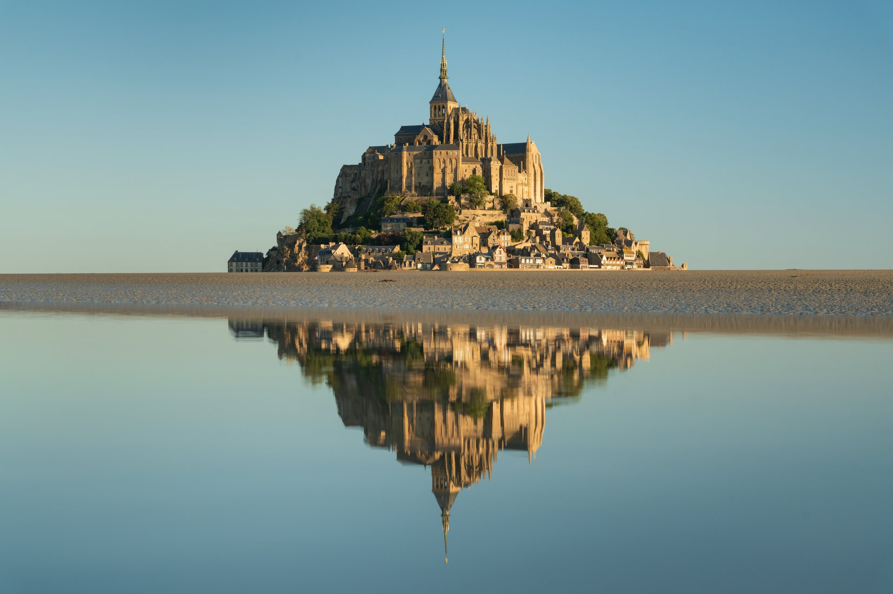 | Mont St Michel after sunrise by Lynx1211, CC BY-SA 4.0. Cropped and optimised for the desktop and mobile homepage hero. |
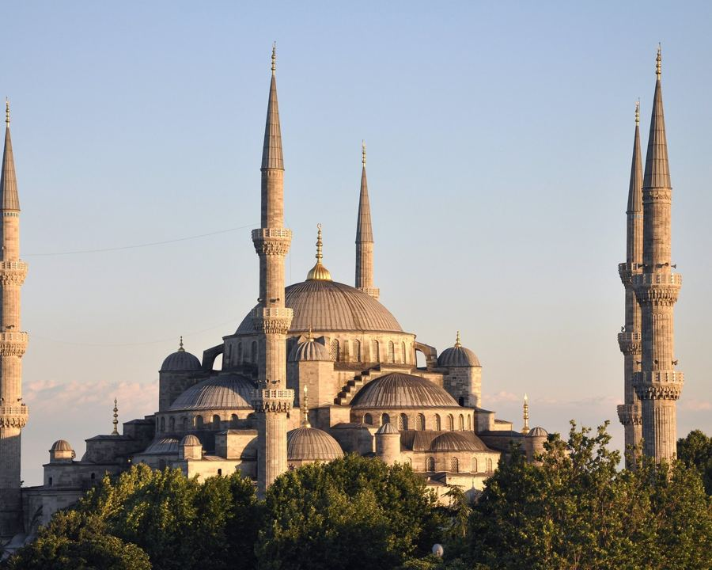 | Exterior of Sultan Ahmed I Mosque in Istanbul, Turkey 002 by Moonik, CC BY-SA 3.0. Resized and compressed. |
 | Ortaköy Mosque from the Bosphorus - 20250825 by mike, CC BY-SA 4.0. Resized and compressed. |
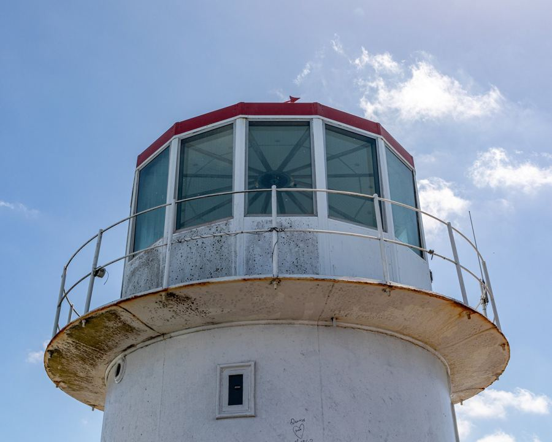 | Cape Town (ZA), Cape Point Nature Reserve, Old Cape Point Lighthouse -- 2024 -- 3373 by Dietmar Rabich, CC BY-SA 4.0. Resized and compressed. |
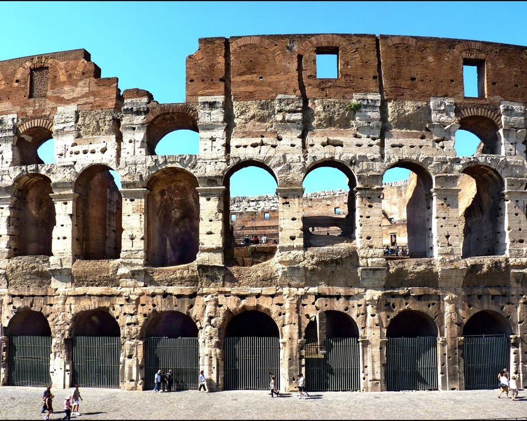 | Anfiteatro Flavio - Colosseo - panoramio by patano, CC BY-SA 3.0. Resized and compressed. |
 | Park Güell - view of Sagrada Familia by Joe Mabel, CC BY-SA 4.0. Cropped to 3:2 and compressed for this site. |
 | Park Güell 02 by Bernard Gagnon, CC BY-SA 3.0. Cropped to 3:2 and compressed for this site. |
 | Casa Batlló 01 by Bernard Gagnon, CC BY-SA 3.0. Cropped to 3:2 and compressed for this site. |
 | Casa Milà, general view by Thomas Ledl, CC BY-SA 4.0. Cropped to 3:2 and compressed for this site. |
 | 046 Catedral de Barcelona i torre romana de Ca l'Ardiaca, des de la plaça de la Catedral by Enric, CC BY-SA 4.0. Cropped to 3:2 and compressed for this site. |
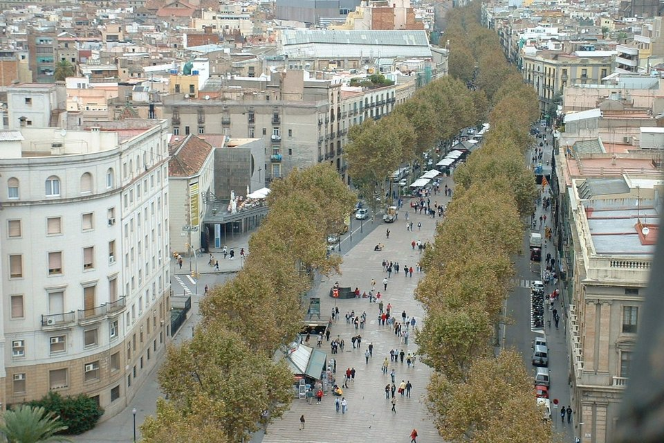 | La Rambla Barcelona 2004 by Djm1279 at English Wikipedia, Public domain. Cropped to 3:2 and compressed for this site. |
 | Camp Nou aerial by Oh-Barcelona.com from Barcelona, Spain, CC BY 2.0. Cropped to 3:2 and compressed for this site. |
 | Montserrat Natural Park 4 by kallerna, CC BY-SA 4.0. Cropped to 3:2 and compressed for this site. |
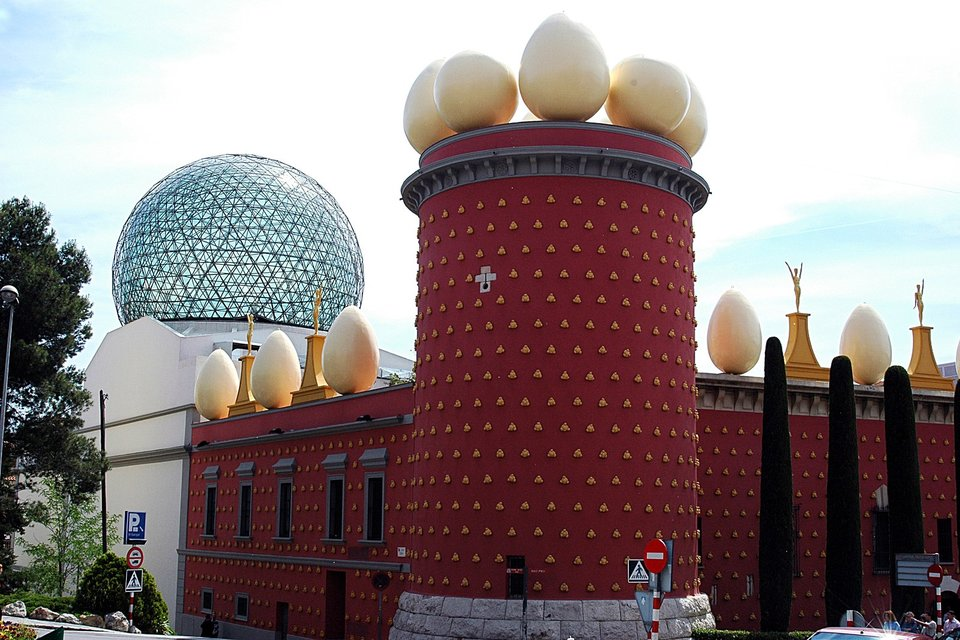 | 117 Figueres, torre Galatea i cúpula del Museu Dalí by Enfo, CC BY-SA 3.0. Cropped to 3:2 and compressed for this site. |
 | Museo del Prado 2016 (25185969599) by Emilio J. Rodríguez Posada, CC BY-SA 2.0. Cropped to 3:2 and compressed for this site. |
 | Palacio Real de Madrid - 13 by Carlos Delgado, CC BY-SA 3.0. Cropped to 3:2 and compressed for this site. |
 | Sabatini Building, Museo Nacional Centro de Arte Reina Sofía 1 by Joseolgon, CC BY 4.0. Cropped to 3:2 and compressed for this site. |
 | Plaza Mayor de Madrid - 01 by Carlos Delgado, CC BY-SA 3.0. Cropped to 3:2 and compressed for this site. |
 | Santiagobernabeupanoramav45 by لا روسا, CC BY-SA 3.0. Cropped to 3:2 and compressed for this site. |
 | Toledo (37737041515) by Dmitry Dzhus from London, CC BY 2.0. Cropped to 3:2 and compressed for this site. |
 | Aqueduct of Segovia 08 by Bernard Gagnon, CC BY-SA 3.0. Cropped to 3:2 and compressed for this site. |
 | Monasterio de El Escorial en Madrid by Zvonimir Stamenov, CC BY-SA 4.0. Cropped to 3:2 and compressed for this site. |
 | Murallas de Ávila - 07 by Carlos Delgado, CC BY-SA 3.0. Cropped to 3:2 and compressed for this site. |
 | Salamanca - BC 04 by Selbymay, CC BY-SA 3.0 es. Cropped to 3:2 and compressed for this site. |
 | Casas colgantes de Cuenca iluminadas 01 by Edmundo Sáez, CC BY-SA 4.0. Cropped to 3:2 and compressed for this site. |
 | Granada - View from Mirador de San Nicolás - 02 by Diego Delso, CC BY-SA 4.0. Cropped to 3:2 and compressed for this site. |
 | Albaicin 2012 San Nicolas Sacromonte by Jebulon, CC0. Cropped to 3:2 and compressed for this site. |
 | Patio de las doncellas-ret by Cat from Sevilla, Spain, CC BY 2.0. Cropped to 3:2 and compressed for this site. |
 | Sevilla Cathedral - Southeast by Ingo Mehling, CC BY-SA 4.0. Cropped to 3:2 and compressed for this site. |
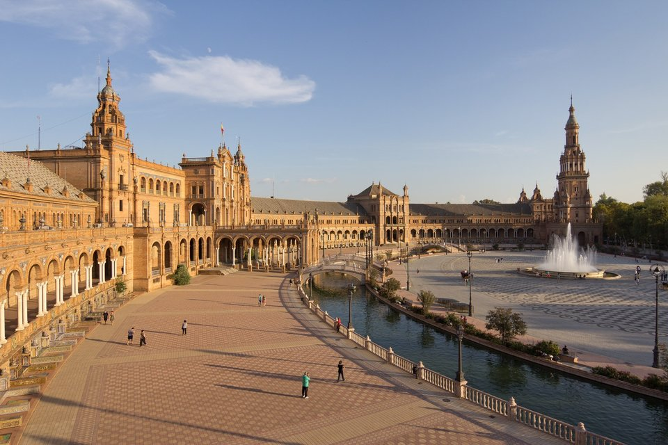 | Plaza de España (Sevilla) - 01 by Carlos Delgado, CC BY-SA 4.0. Cropped to 3:2 and compressed for this site. |
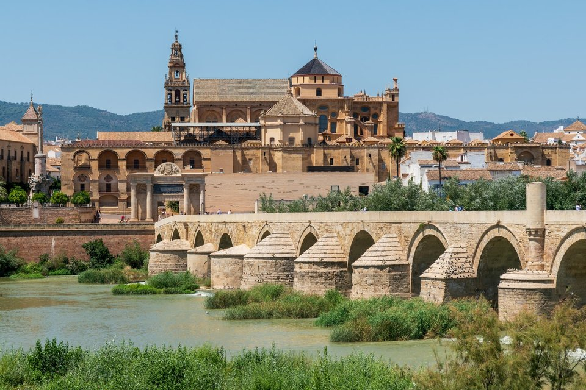 | Centro Histórico, 16.9 -- 2023 -- Córdoba, España by Jose María Ligero Loarte, CC BY-SA 4.0. Cropped to 3:2 and compressed for this site. |
 | Delimitación de Madinat al-Zahra 3 by Naza28, CC BY-SA 4.0. Cropped to 3:2 and compressed for this site. |
 | Panorama of Ronda by Tesla Delacroix, CC BY-SA 4.0. Cropped to 3:2 and compressed for this site. |
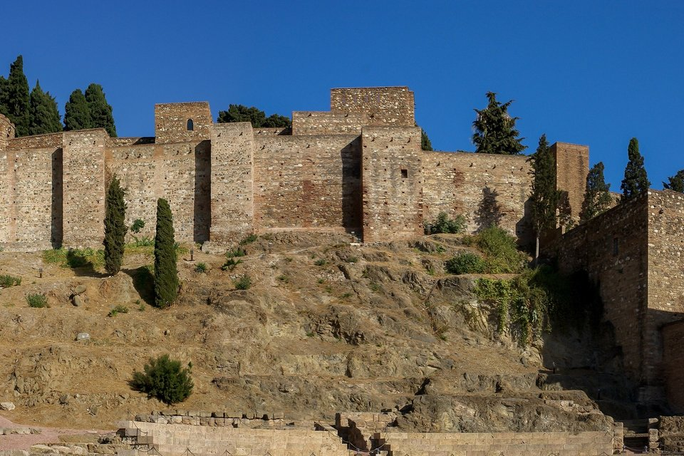 | Alcazaba, Malaga (DSC02867-Pano) by Matti Blume, CC BY-SA 4.0. Cropped to 3:2 and compressed for this site. |
 | Caminito del Rey, Málaga, España, 2023-05-18, DD 27 by Diego Delso, CC BY-SA 4.0. Cropped to 3:2 and compressed for this site. |
 | Santiago Compostela Cathedral 2023 - View from Alameda Park by Fernando Pascullo, CC BY-SA 4.0. Cropped to 3:2 and compressed for this site. |
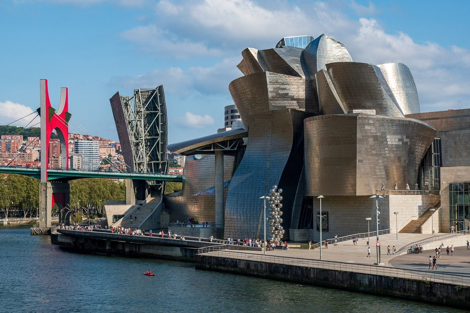 | Museo Guggenheim -- 2021 -- Bilbao, Euskadi, España by José Ligero Loarte, CC BY-SA 4.0. Cropped to 3:2 and compressed for this site. |
 | Catedral de Santa María de Burgos - 03 by Carlos Delgado, CC BY-SA 4.0. Cropped to 3:2 and compressed for this site. |
 | San Sebastian at night from Monte Urgull by Phillip Maiwald, CC BY-SA 3.0. Cropped to 3:2 and compressed for this site. |
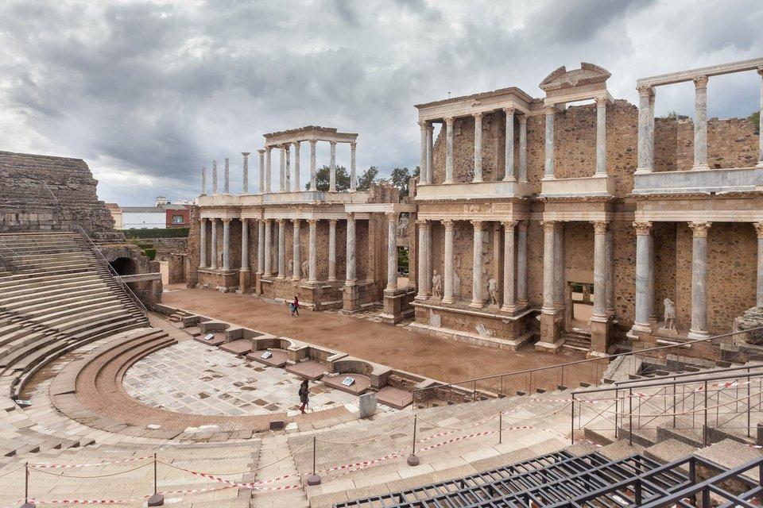 | Teatro romano de Mérida. España-2 by Lmbuga (Luis Miguel Bugallo Sánchez), CC BY-SA 4.0. Cropped to 3:2 and compressed for this site. |
 | Puerta de los Serranos, Valencia, España, 2014-06-30, DD 86 by Diego Delso, CC BY-SA 4.0. Cropped to 3:2 and compressed for this site. |
 | Hemispheric - Valencia, Spain - Jan 2007 by Diliff, CC BY 2.5. Cropped to 3:2 and compressed for this site. |
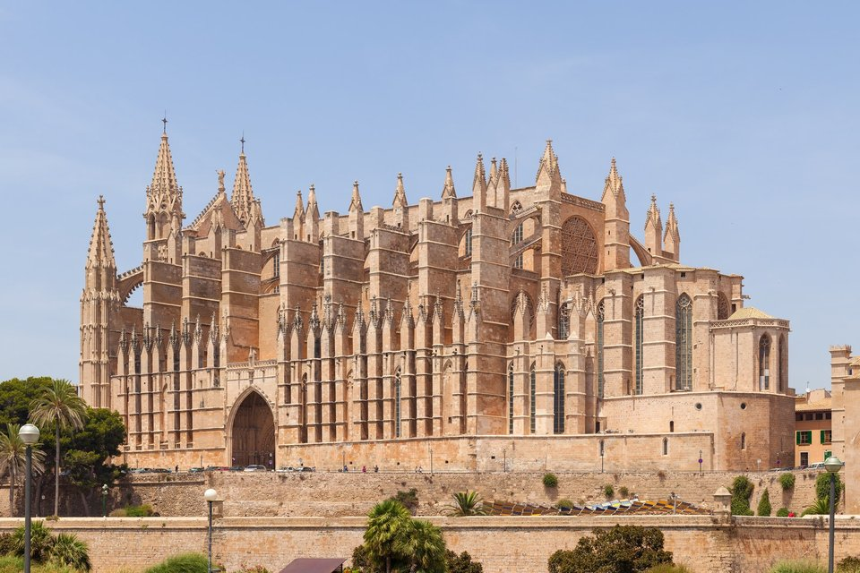 | Kathedrale von Palma II by Thomas Wolf, www.foto-tw.de, CC BY-SA 3.0 de. Cropped to 3:2 and compressed for this site. |
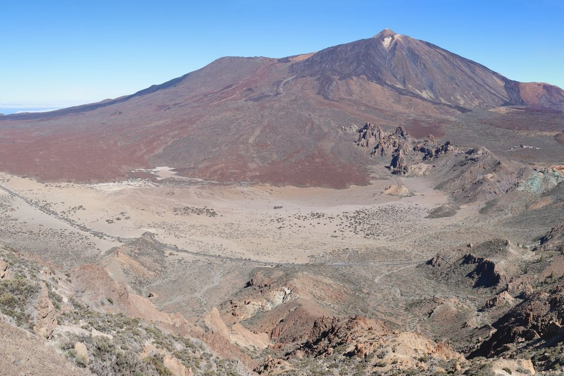 | Teide Canadas by Ingo Mehling, CC BY-SA 4.0. Cropped to 3:2 and compressed for this site. |
 | Colosseum in Rome-April 2007-1- copie 2B by Diliff, CC BY-SA 2.5. Cropped to 3:2 and compressed for this site. |
 | Pantheon in Rome (1) by Krzysztof Golik, CC BY-SA 4.0. Cropped to 3:2 and compressed for this site. |
 | Forum romanum 6k (5760x2097) by BeBo86, CC BY-SA 3.0. Cropped to 3:2 and compressed for this site. |
 | Fontaine Trevi - Rome by Wilfredor, CC0. Cropped to 3:2 and compressed for this site. |
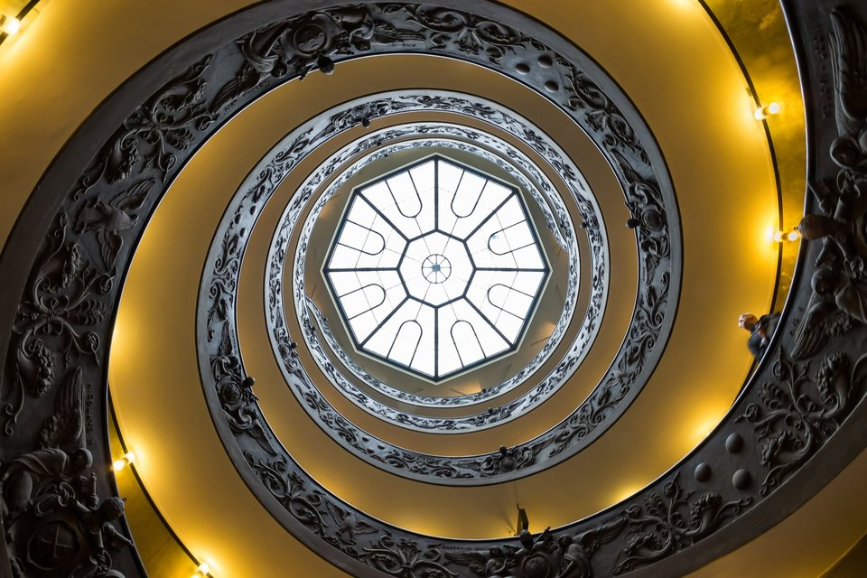 | Vatican Museums Spiral Staircase Looking Up 2012 by Colin, CC BY-SA 3.0. Cropped to 3:2 and compressed for this site. |
 | Vatican City (VA), Petersdom -- 2013 -- 4352 by Dietmar Rabich, CC BY-SA 4.0. Cropped to 3:2 and compressed for this site. |
 | RomaCastelSantAngelo by Andreas Tille, CC BY-SA 4.0. Cropped to 3:2 and compressed for this site. |
 | Galleria borghese facade by Alessio Damato, CC BY-SA 3.0. Cropped to 3:2 and compressed for this site. |
 | Garten und Villa D´Este 16 by Burkhard Mücke, CC BY-SA 4.0. Cropped to 3:2 and compressed for this site. |
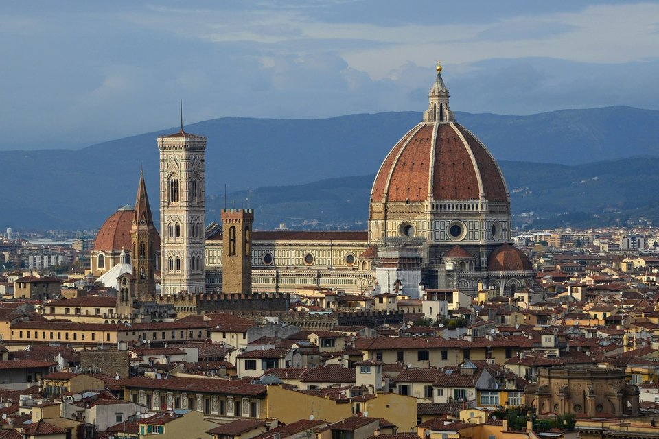 | Duomo, Firenze by Clément Bardot, CC BY-SA 4.0. Cropped to 3:2 and compressed for this site. |
 | Panorama di Firenze centro visto dal Piazzale Michelangelo by PROPOLI87, CC BY-SA 4.0. Cropped to 3:2 and compressed for this site. |
 | Piazzale degli Uffizi perspective view, Florence, Italy, August 2025 by Verum3414, CC BY 4.0. Cropped to 3:2 and compressed for this site. |
 | David (61380h) by Rhododendrites, CC BY-SA 4.0. Cropped to 3:2 and compressed for this site. |
 | PiazzadelCampoSiena by Massimo Catarinella, CC BY-SA 3.0. Cropped to 3:2 and compressed for this site. |
 | Here it is, The Piazza dei Miracoli! Pisa, Italy by Ввласенко, CC BY-SA 3.0. Cropped to 3:2 and compressed for this site. |
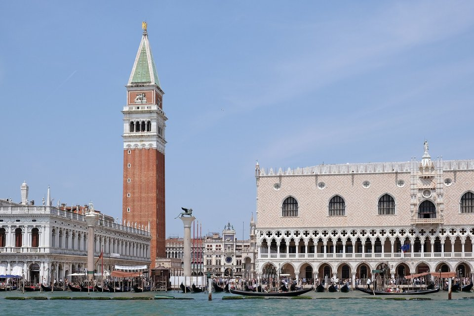 | Piazza San Marco from Giudecca Canal by kallerna, CC BY-SA 4.0. Cropped to 3:2 and compressed for this site. |
 | Saint Mark's Campanile and Palazzo Ducale, Venice, September 2017 -2 by Martin Falbisoner, CC BY-SA 4.0. Cropped to 3:2 and compressed for this site. |
 | Panorama of Canal Grande and Ponte di Rialto, Venice - September 2017 by Martin Falbisoner, CC BY-SA 4.0. Cropped to 3:2 and compressed for this site. |
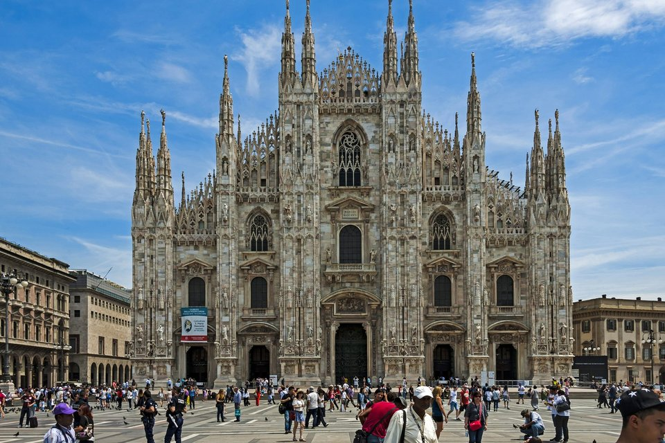 | Milan Duomo with tourists in Piazza by Daniel Case, CC BY-SA 3.0. Cropped to 3:2 and compressed for this site. |
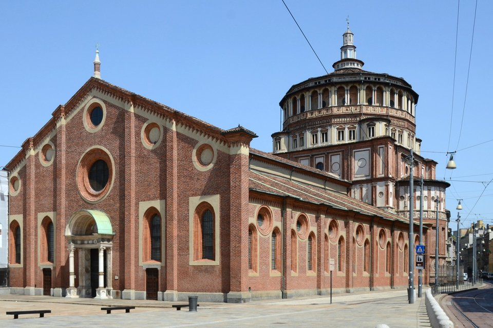 | Santa Maria delle Grazie Milan 2013 by Marcin Białek, CC BY-SA 3.0. Cropped to 3:2 and compressed for this site. |
 | Varenna 3792 by Henry Kellner, CC BY-SA 4.0. Cropped to 3:2 and compressed for this site. |
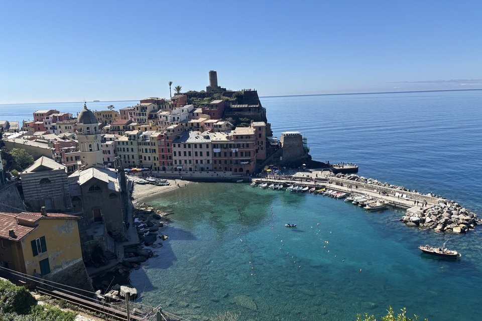 | Vernazza harbour panorama, Cinque Terre, Liguria, Italy, April 2026 by Mathieu Chollet - MChollet, CC BY-SA 4.0. Cropped to 3:2 and compressed for this site. |
 | Museo Egizio e Galleria sabauda, Torino by Georgius LXXXIX at Italian Wikipedia, Public domain. Cropped to 3:2 and compressed for this site. |
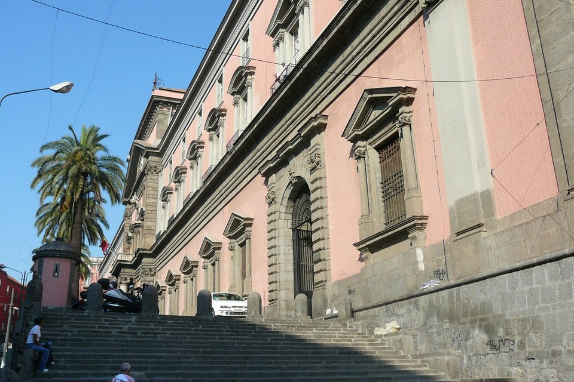 | Museo Nazionale Archeologico di Napoli by M.Pardy, CC BY 2.0. Cropped to 3:2 and compressed for this site. |
 | Antigua ciudad de Herculano, Italia, 2023-03-27, DD 141 by Diego Delso, CC BY-SA 4.0. Cropped to 3:2 and compressed for this site. |
 | Amalfi Coast - Flickr - concrete^fells (3) by concrete&fells, CC BY 2.0. Cropped to 3:2 and compressed for this site. |
 | Capri harbour from Anacapri 2013 by Berthold Werner, CC BY-SA 3.0. Cropped to 3:2 and compressed for this site. |
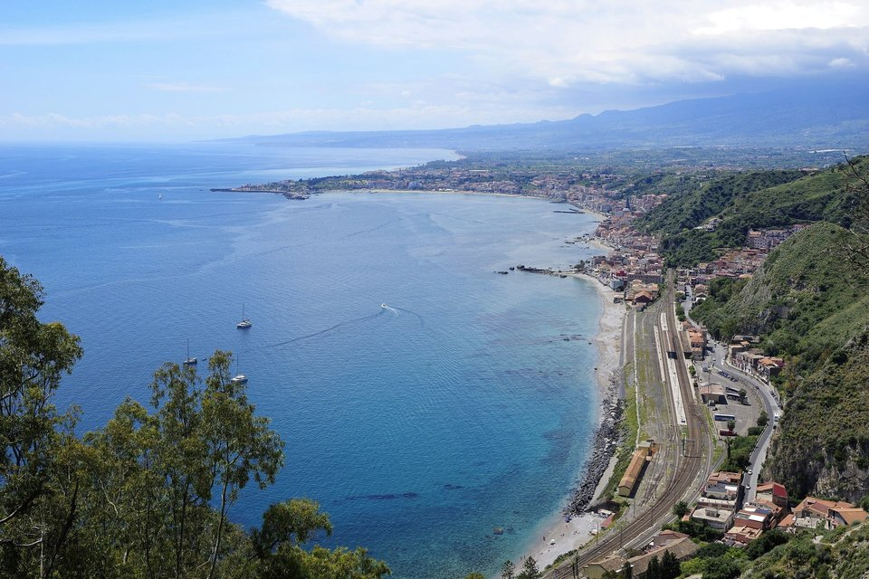 | Taormina BW 2025-04-27 12-35-55 by Berthold Werner, CC BY-SA 4.0. Cropped to 3:2 and compressed for this site. |
 | Temple of Concordia, Agrigento BW 2012-10-07 13-09-13 by Berthold Werner, CC BY-SA 3.0. Cropped to 3:2 and compressed for this site. |
 | Paris Notre-Dame Southeast View 01 by Uoaei1, CC BY-SA 4.0. Cropped to 3:2 and compressed for this site. |
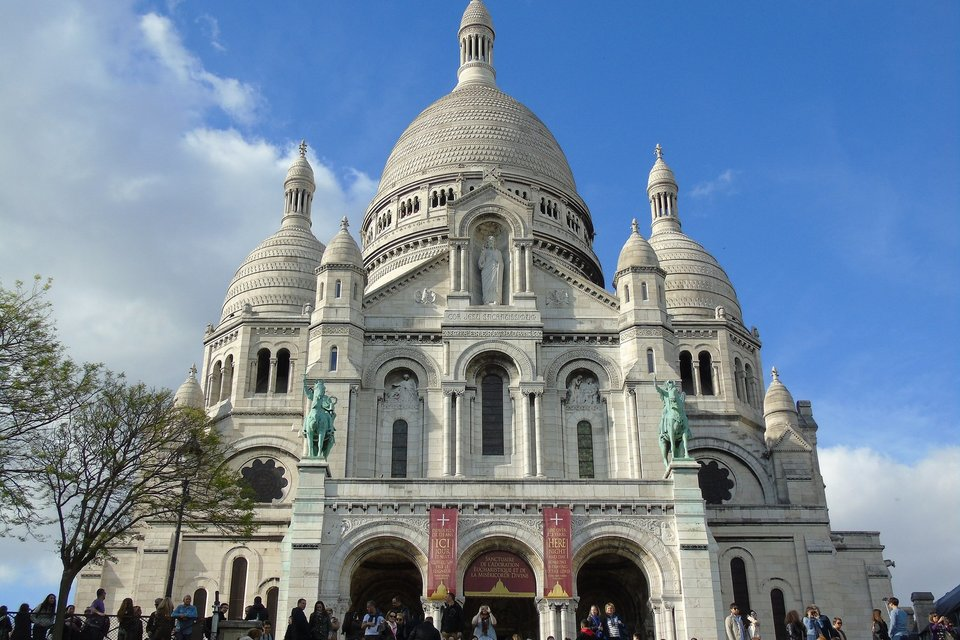 | Basilique du Sacré-Cœur.001 - Montmartre by Fernando Losada Rodríguez, CC BY-SA 4.0. Cropped to 3:2 and compressed for this site. |
 | Louvre museum 01 by Maksim Sokolov (maxergon.com), CC BY-SA 4.0. Cropped to 3:2 and compressed for this site. |
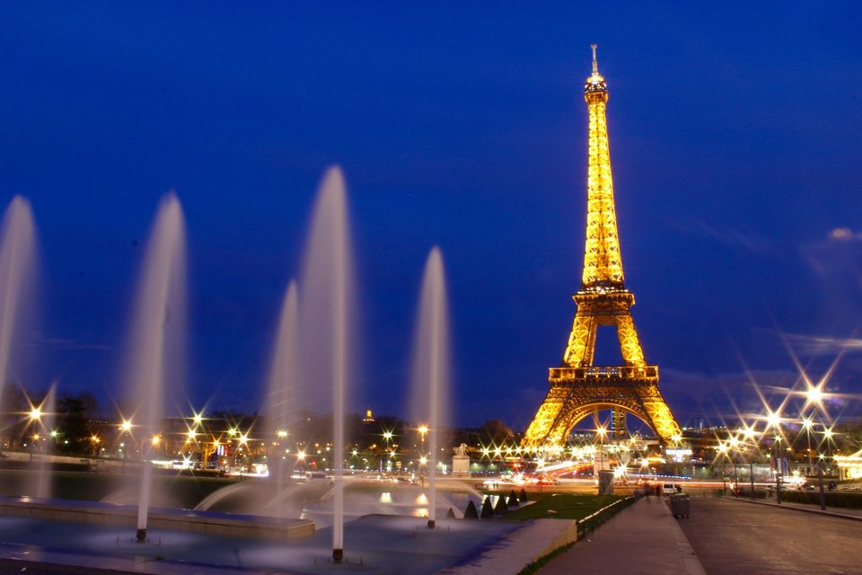 | Tour eiffel paris-eiffel tower by Chadi saad, CC BY-SA 4.0. Cropped to 3:2 and compressed for this site. |
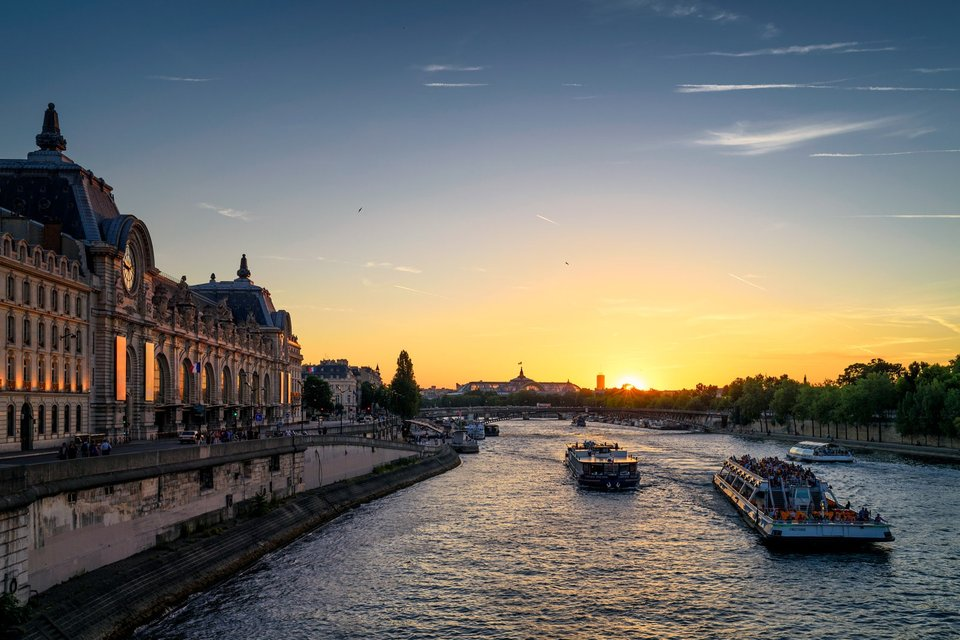 | Musée D Orsay At Sunset by Joe Desousa, CC BY 3.0. Cropped to 3:2 and compressed for this site. |
 | Arc de Triomphe de l'Étoile at night vertical fix by Wilfredor, CC0. Cropped to 3:2 and compressed for this site. |
 | Paris - Les invalides - Le Dôme - 138 by Thesupermat, CC BY-SA 3.0. Cropped to 3:2 and compressed for this site. |
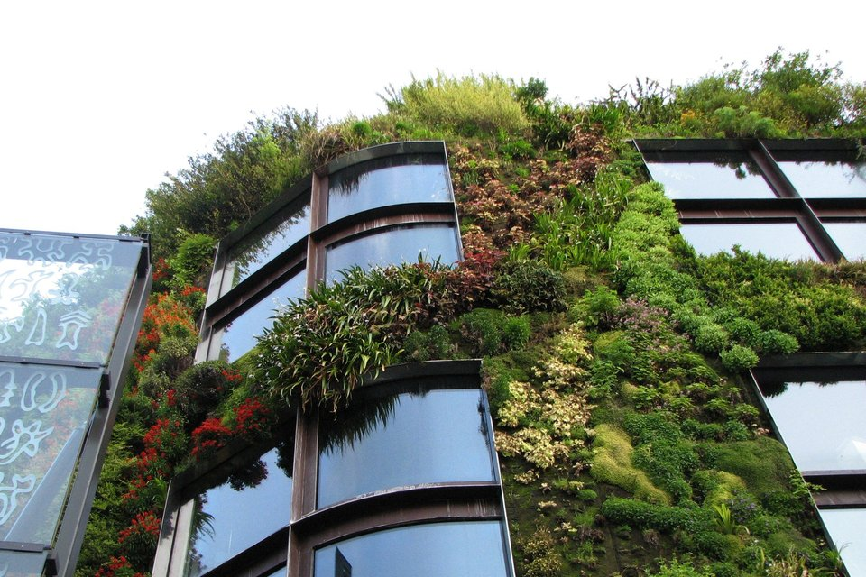 | Musée du Quai Branly April 30, 2008 n2 by Lauren Manning, CC BY 2.0. Cropped to 3:2 and compressed for this site. |
 | Santa Capilla, París, Francia, 2022-11-01, DD 80-82 HDR by Diego Delso, CC BY-SA 4.0. Cropped to 3:2 and compressed for this site. |
 | Orangerie Tuileries by Jebulon, CC0. Cropped to 3:2 and compressed for this site. |
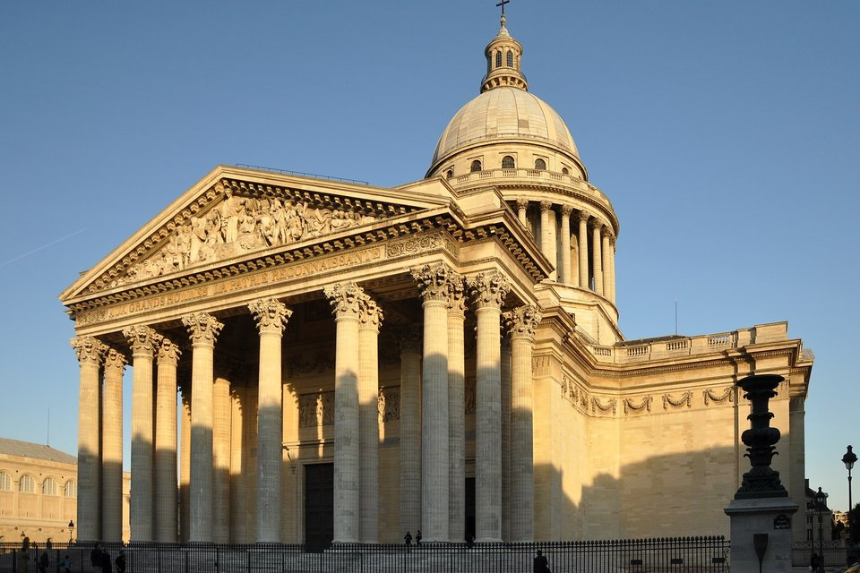 | Pantheon of Paris 007 by Moonik, CC BY-SA 3.0. Cropped to 3:2 and compressed for this site. |
 | Conciergerie, París, Francia, 2022-10-29, DD 134 by Diego Delso, CC BY-SA 4.0. Cropped to 3:2 and compressed for this site. |
 | L'hôtel Biron (musée Rodin) à Paris, 13 juin 2021 01 by Jean-Pierre Dalbéra, CC BY 2.0. Cropped to 3:2 and compressed for this site. |
 | Place des Vosges at night, Paris by Gerda Arendt, CC BY-SA 4.0. Cropped to 3:2 and compressed for this site. |
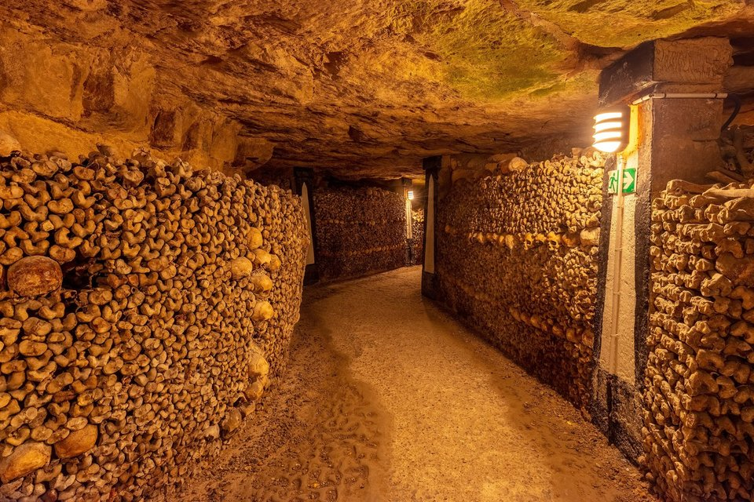 | Catacumbas, París, Francia, 2022-11-01, DD 99-101 HDR by Diego Delso, CC BY-SA 4.0. Cropped to 3:2 and compressed for this site. |
 | Palais Garnier façade nord Paris 3 by Chabe01, CC BY-SA 4.0. Cropped to 3:2 and compressed for this site. |
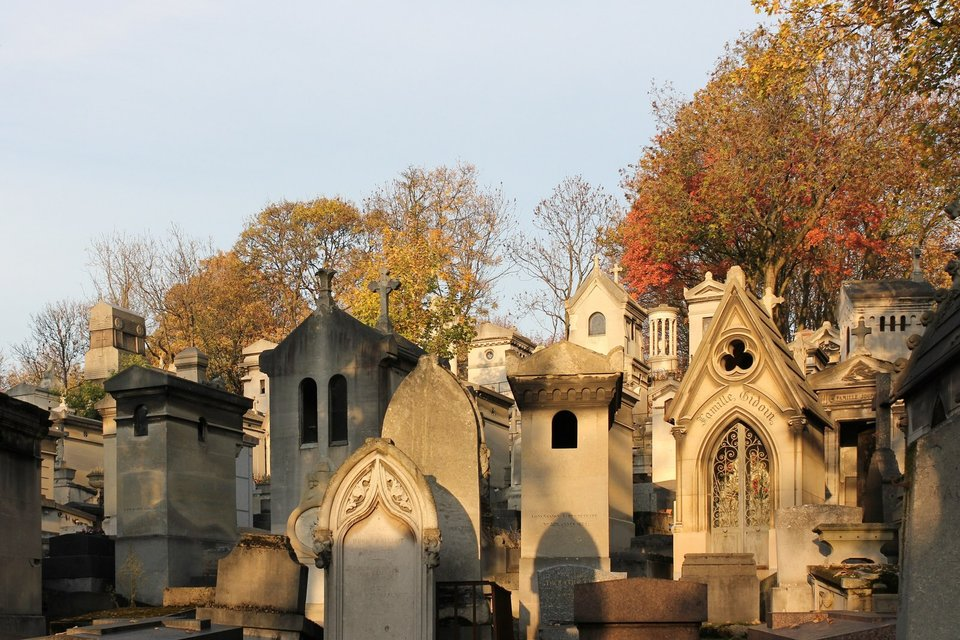 | Cemetery Père-Lachaise in autumn 01 by Pierre-Yves Beaudouin, CC BY-SA 3.0. Cropped to 3:2 and compressed for this site. |
 | Hôtel de la Marine by Moonik, CC BY-SA 3.0. Cropped to 3:2 and compressed for this site. |
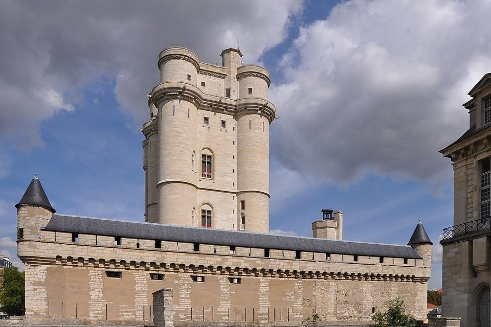 | Château de Vincennes 001 by Moonik, CC BY-SA 3.0. Cropped to 3:2 and compressed for this site. |
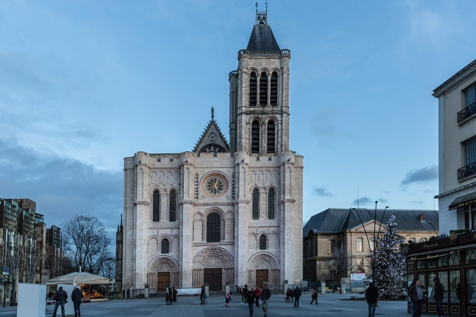 | Basilica of Saint Denis, Paris, France by Ninaras, CC BY 4.0. Cropped to 3:2 and compressed for this site. |
 | Water reflection of the Orangerie garden and Palace of Versailles with blue sky in France by Basile Morin, CC BY-SA 4.0. Cropped to 3:2 and compressed for this site. |
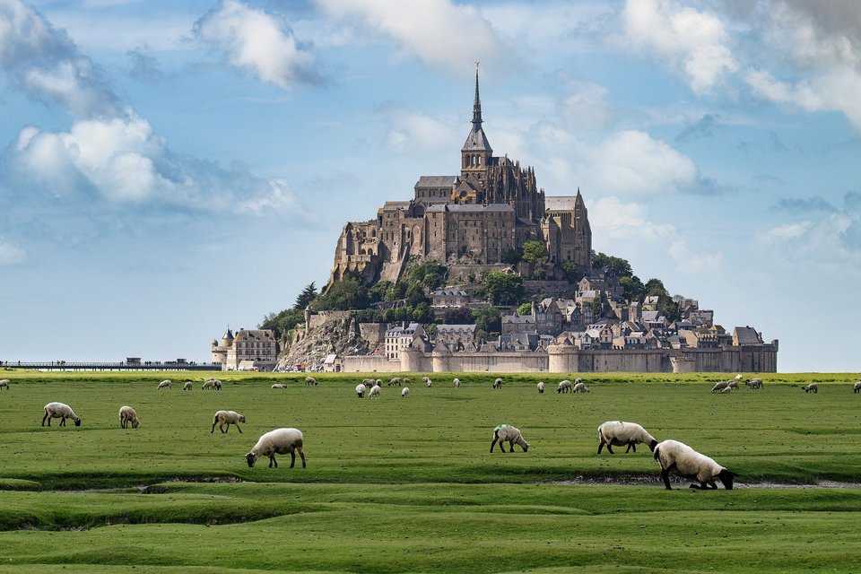 | Mont Saint Michel and sheep - 2026 by Eric Kilby, CC BY-SA 4.0. Cropped to 3:2 and compressed for this site. |
 | Château de Fontainebleau - escalier (Fontainebleau) by Gzen92, CC BY-SA 4.0. Cropped to 3:2 and compressed for this site. |
 | Exterior view of the Château de Chantilly with bridge under blue sky Oise France by Basile Morin, CC BY-SA 4.0. Cropped to 3:2 and compressed for this site. |
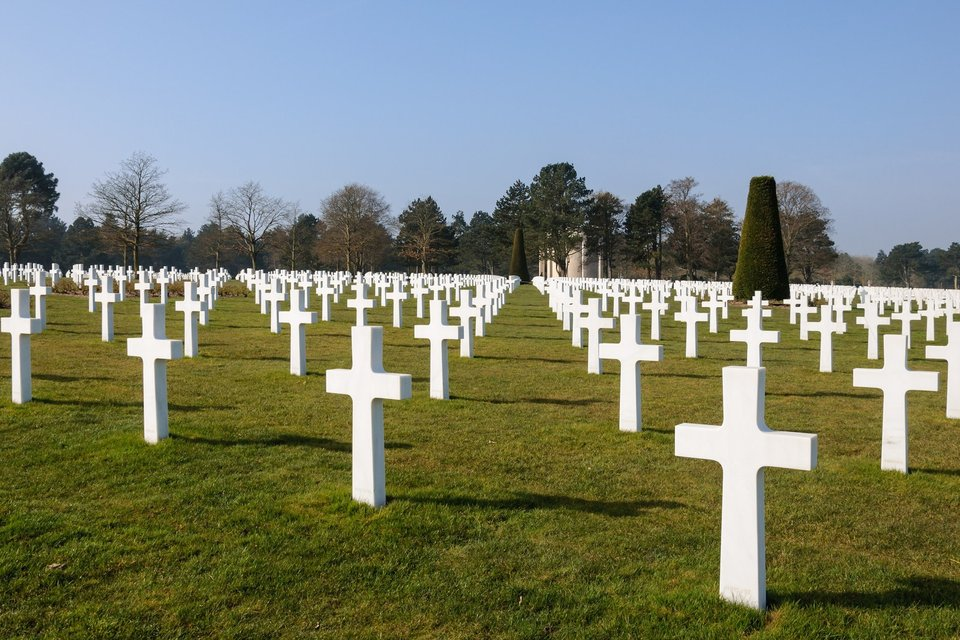 | Cimetiere americain Colleville-sur-Mer by Myrabella, CC BY-SA 3.0. Cropped to 3:2 and compressed for this site. |
 | Claude Monet's Gardens by World3000, CC BY-SA 4.0. Cropped to 3:2 and compressed for this site. |
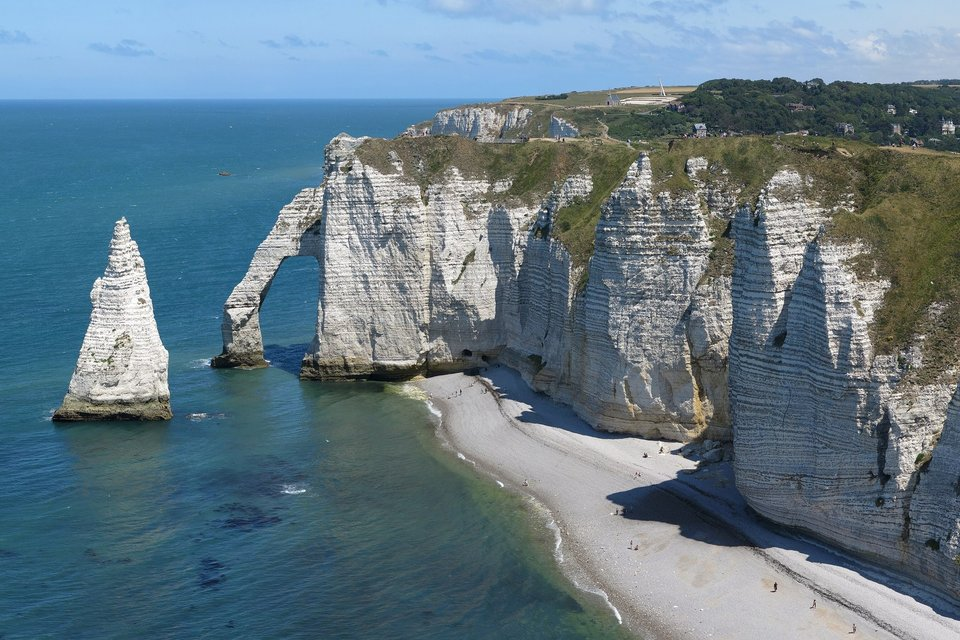 | Porte d'Aval (Vue depuis la Manneporte) by Jörg Braukmann, CC BY-SA 4.0. Cropped to 3:2 and compressed for this site. |
 | Main entrance cathedral Bayeux by Jebulon, CC0. Cropped to 3:2 and compressed for this site. |
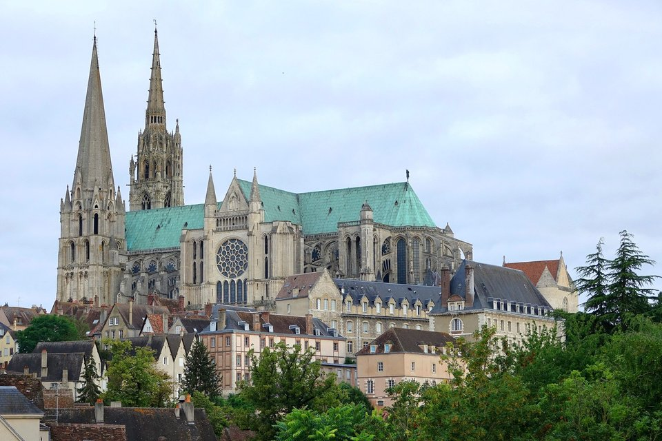 | Cathédrale Notre-Dame (Chartres) (2) by Gzen92, CC BY-SA 4.0. Cropped to 3:2 and compressed for this site. |
 | Palais du Tau and Cathédrale Notre-Dame de Reims, East View 20140306 by DXR, CC BY-SA 3.0. Cropped to 3:2 and compressed for this site. |
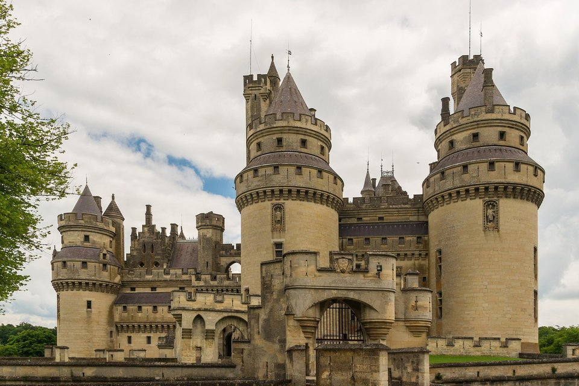 | Château de Pierrefonds exterior Oise by Jebulon, CC0. Cropped to 3:2 and compressed for this site. |
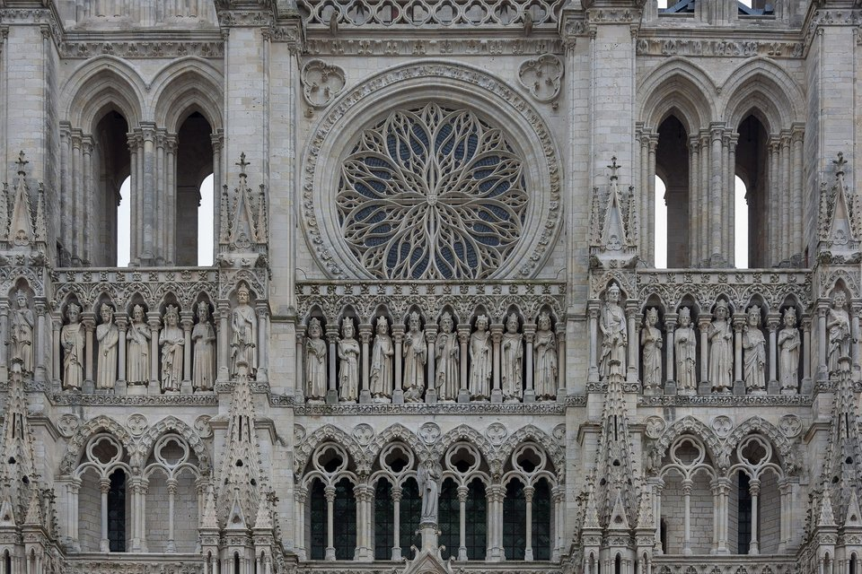 | Amiens France Cathédrale-Notre-Dame-d-Amiens-03 by CEphoto, Uwe Aranas, CC BY-SA 3.0. Cropped to 3:2 and compressed for this site. |
 | Lourdes France fronton fc07 by Fczarnowski, CC BY-SA 3.0. Cropped to 3:2 and compressed for this site. |
 | Marseille vieux port pano by Velvet, CC BY-SA 4.0. Cropped to 3:2 and compressed for this site. |
 | Nizza-Côte d'Azur by Tobi 87, CC BY-SA 3.0. Cropped to 3:2 and compressed for this site. |
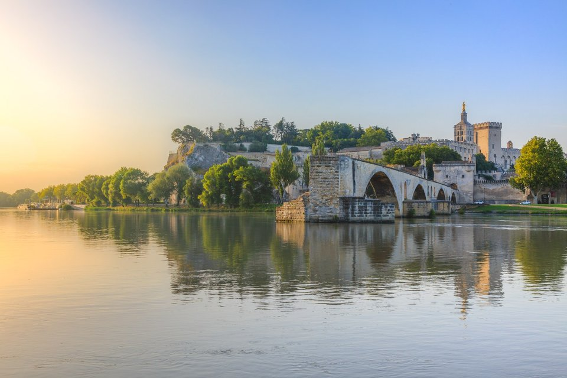 | Saint-benezet in southeastern France by Chiugoran, CC BY-SA 3.0. Cropped to 3:2 and compressed for this site. |
 | Cité de Carcassonne et Pont-Vieux by Lynx1211, CC BY-SA 4.0. Cropped to 3:2 and compressed for this site. |
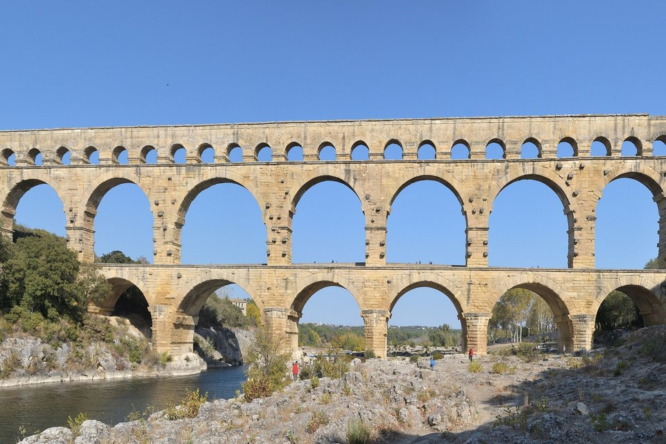 | Pont du Gard 2017 by Wolfgang Moroder, CC BY-SA 3.0. Cropped to 3:2 and compressed for this site. |
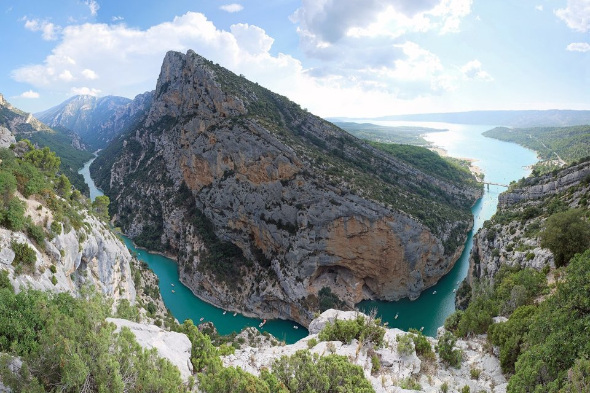 | Verdon Gorge 1 by kallerna, CC BY-SA 4.0. Cropped to 3:2 and compressed for this site. |
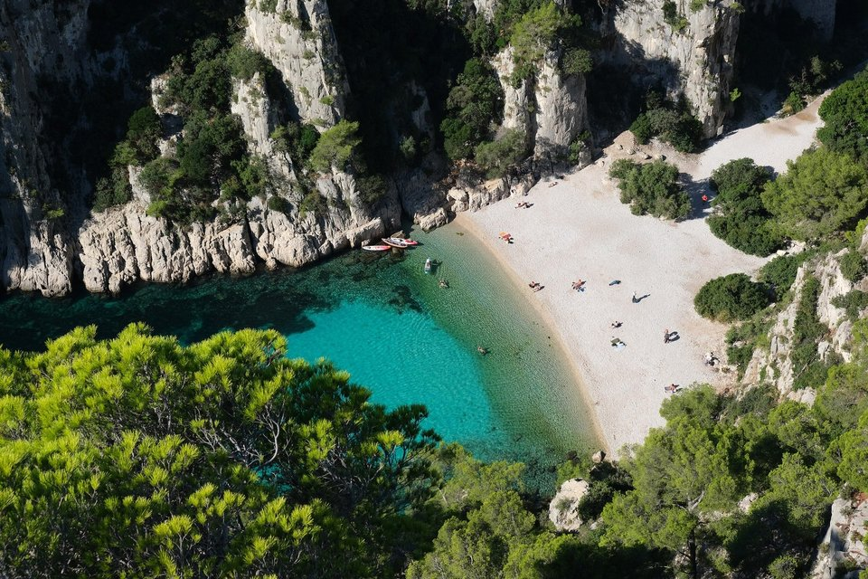 | En-Vau calanque 10 by kallerna, CC BY-SA 4.0. Cropped to 3:2 and compressed for this site. |
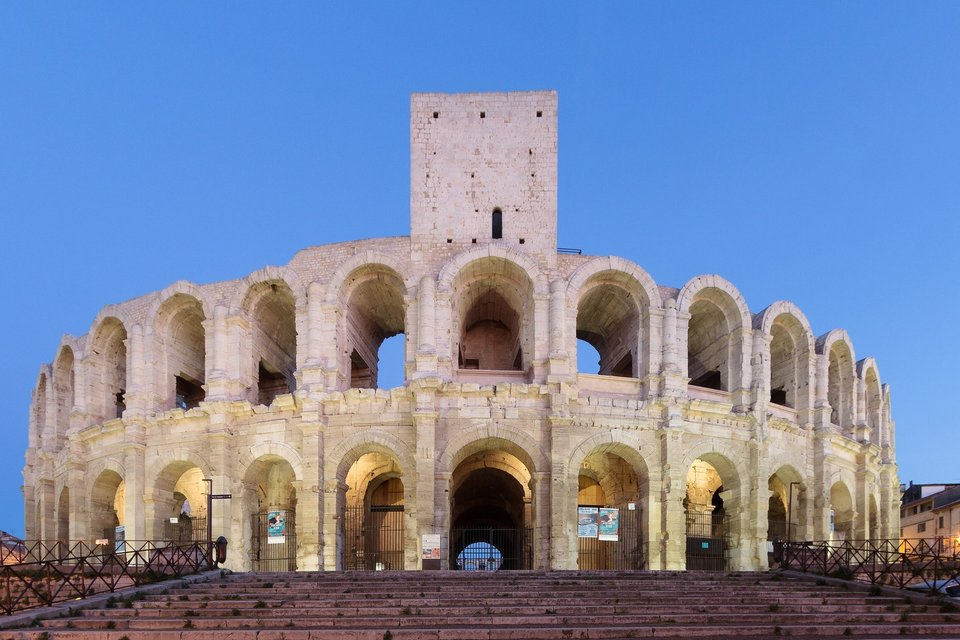 | Arles - 2017-05-24 - Roman Amphitheatre - 3804 by PierreSelim, CC BY 3.0. Cropped to 3:2 and compressed for this site. |
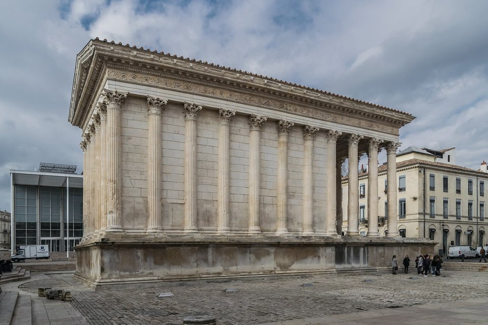 | Maison Carree in Nimes (1) by Krzysztof Golik, CC BY-SA 4.0. Cropped to 3:2 and compressed for this site. |
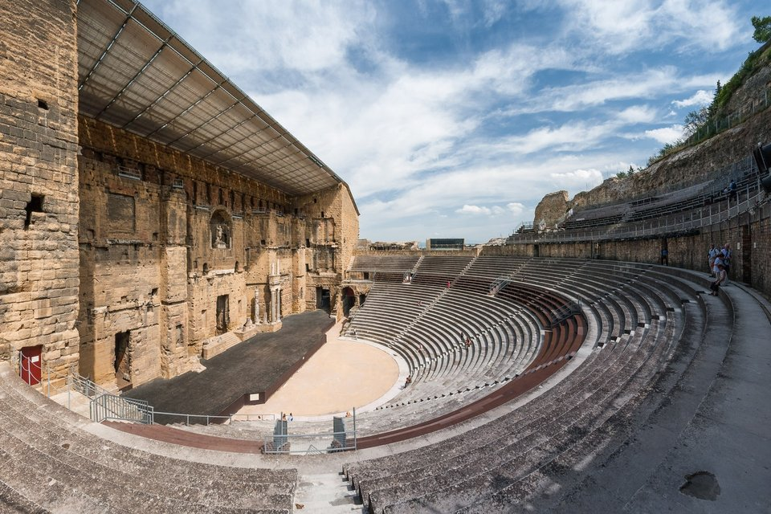 | Roman Theatre in Orange 2008 by Benh LIEU SONG, CC BY-SA 2.0. Cropped to 3:2 and compressed for this site. |
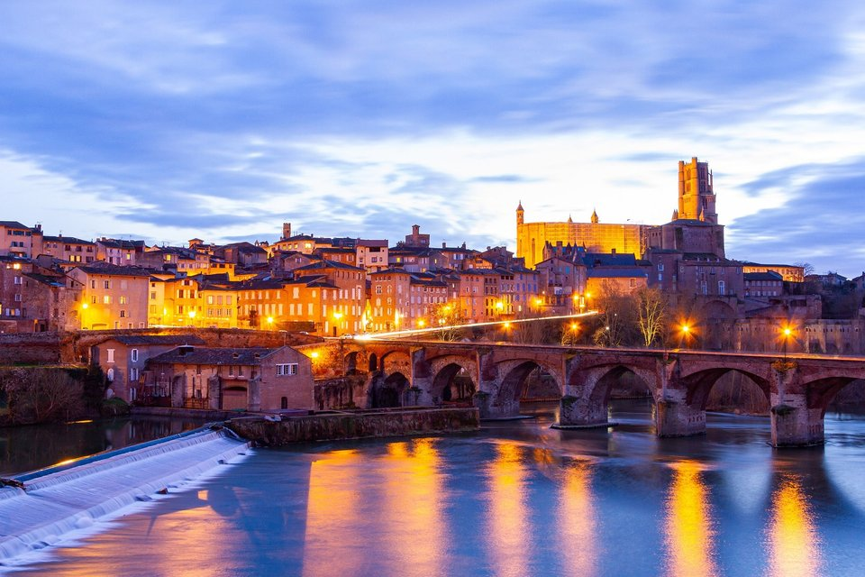 | Albi 2014-02-22 19-52-00 - Tarn river at dusk - 7236 by PierreSelim, CC BY 4.0. Cropped to 3:2 and compressed for this site. |
 | Èze und Cap Ferrat-Grande Corniche by Tobi 87, CC BY-SA 3.0. Cropped to 3:2 and compressed for this site. |
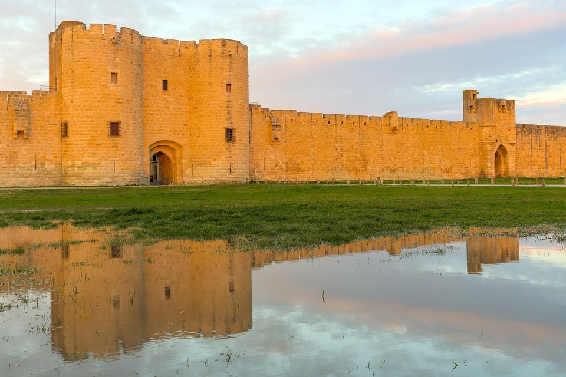 | Aigues-Mortes - Ramparts at sunset - 01 by Benjamin Smith, CC BY-SA 4.0. Cropped to 3:2 and compressed for this site. |
 | Château d'If @ Baie de Marseille 01 by Rémih, CC BY-SA 4.0. Cropped to 3:2 and compressed for this site. |
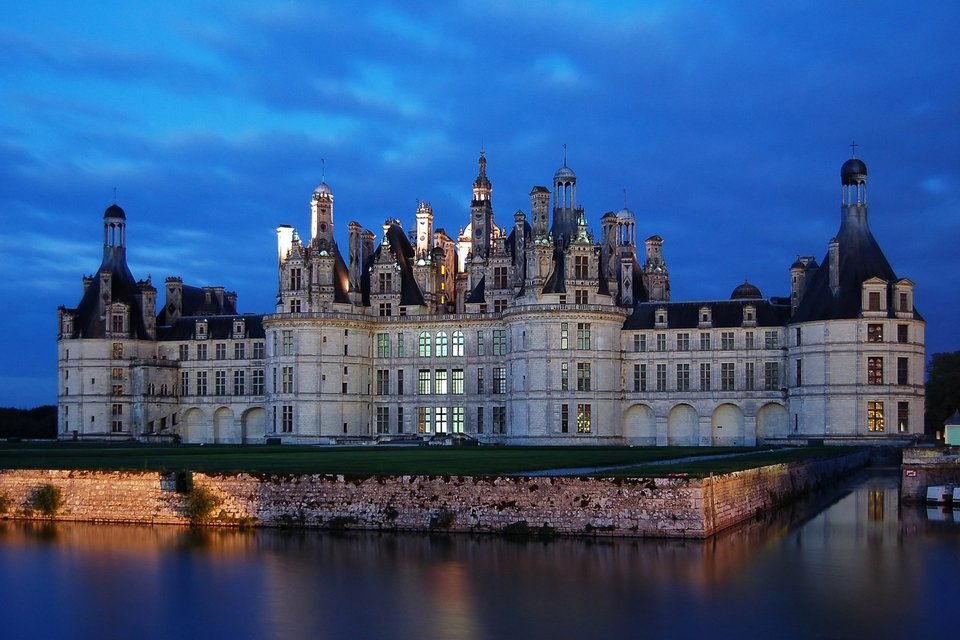 | Schloss Chambord nachts 2 by Wladyslaw, CC BY-SA 3.0. Cropped to 3:2 and compressed for this site. |
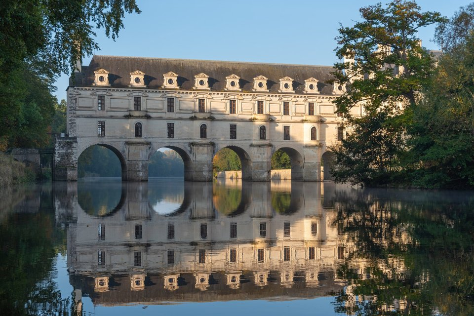 | Château de Chenonceau - Façade Est reflets Cher by Antoine Montulé, CC BY-SA 4.0. Cropped to 3:2 and compressed for this site. |
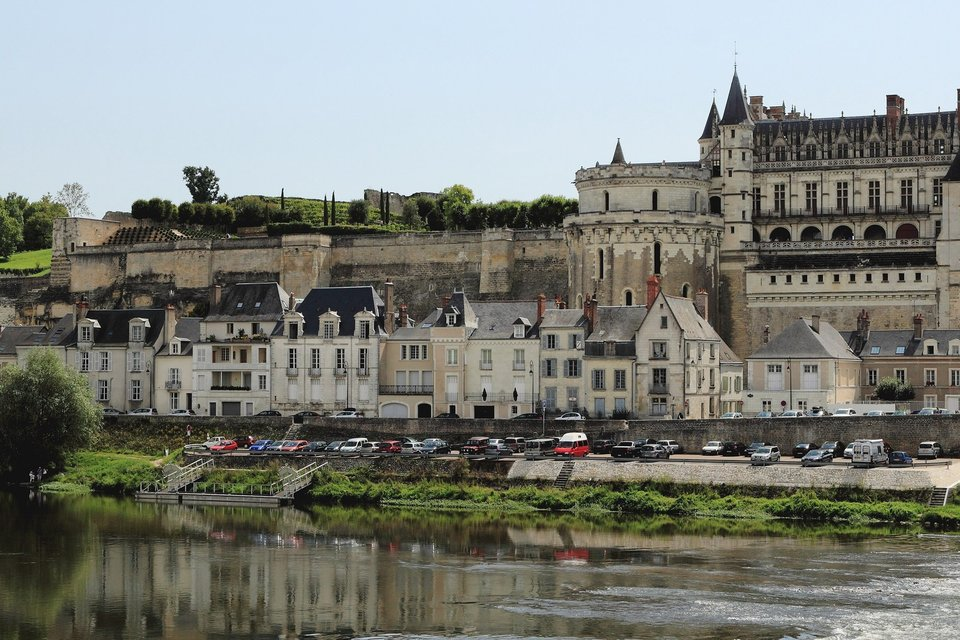 | Château d'Amboise from below by Martin Falbisoner, CC BY-SA 3.0. Cropped to 3:2 and compressed for this site. |
 | Château d'Angers, South view 20170611 1 by DXR, CC BY-SA 4.0. Cropped to 3:2 and compressed for this site. |
 | 0 1157 Château d´Azay-le-Rideau by W. Bulach, CC BY-SA 4.0. Cropped to 3:2 and compressed for this site. |
 | Château de Villandry from the southwest by Ввласенко, CC BY-SA 3.0. Cropped to 3:2 and compressed for this site. |
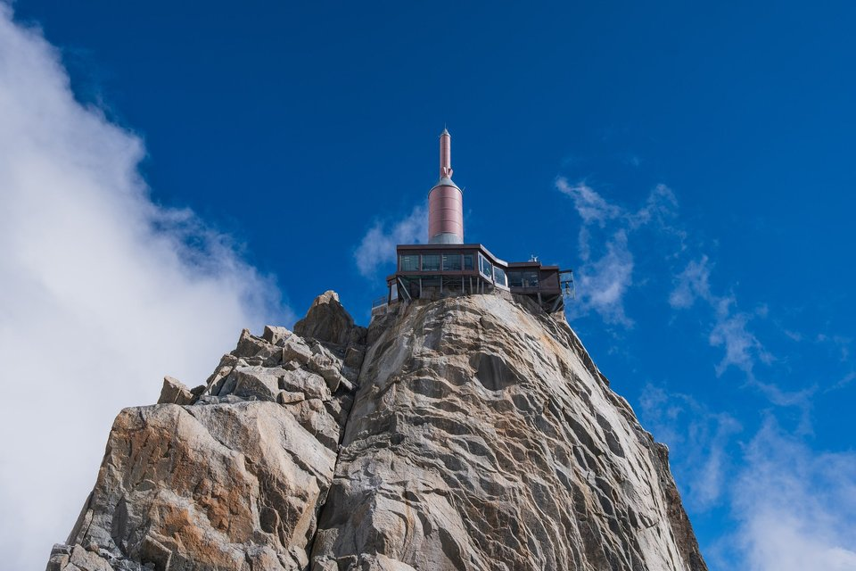 | Aiguille du Midi, Top of Piton Central, Chamonix, Haute-Savoie by Christian David, CC BY-SA 4.0. Cropped to 3:2 and compressed for this site. |
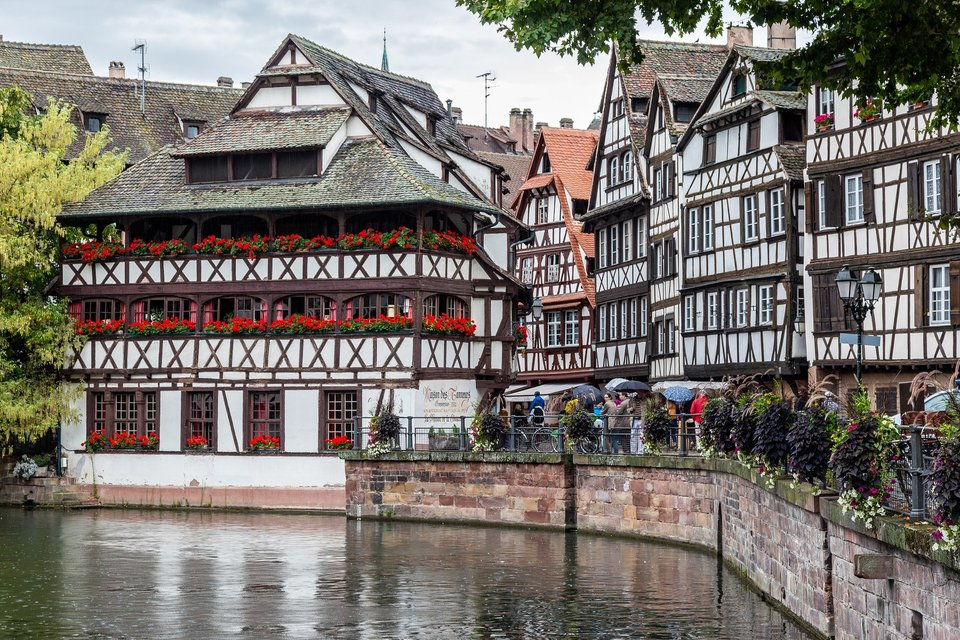 | Gerwerstub 1572, maison des tanneurs, Strasbourg (2014) by JoachimKohler-HB, CC BY-SA 4.0. Cropped to 3:2 and compressed for this site. |
| Annecy Palais de l'Île & Quai de l'Île 5 by Zairon, CC BY-SA 4.0. Cropped to 3:2 and compressed for this site. | |
 | Lyon, an der Saône, Cathédrale Saint-Jean-Baptiste (12.), hinten Notre-Dame de Fourvière (19.) (41976209714) by Herbert Frank from Wien (Vienna), AT, CC BY 2.0. Cropped to 3:2 and compressed for this site. |
 | Beaune - Hôtel-Dieu - Cour - 02 by Benjamin Smith, CC BY-SA 4.0. Cropped to 3:2 and compressed for this site. |
| Little Venice in Colmar 01 by Krzysztof Golik, CC BY-SA 4.0. Cropped to 3:2 and compressed for this site. | |
| Château du Haut-Koenigsbourg (755 m) (Orschwiller) (17) by Gzen92, CC BY-SA 4.0. Cropped to 3:2 and compressed for this site. | |
| Aerial image of Vézelay Abbey (view from the southwest) by Carsten Steger, CC BY-SA 4.0. Cropped to 3:2 and compressed for this site. | |
 | Sommet de la Dune du Pilat by Jörg Braukmann, CC BY-SA 4.0. Cropped to 3:2 and compressed for this site. |
 | Saint-Malo - le Château by Eusebius, CC BY 3.0. Cropped to 3:2 and compressed for this site. |
 | 139 - Place de la Bourse et le miroir d'eau - Bordeaux by Patrick Despoix, CC BY-SA 3.0. Cropped to 3:2 and compressed for this site. |
| Rocamadour, Lot, Midi-Pyrénées, france by Dynamosquito from France, CC BY-SA 2.0. Cropped to 3:2 and compressed for this site. | |
| Lascaux-IV von Snøhetta by JanManu, CC BY-SA 4.0. Cropped to 3:2 and compressed for this site. | |
 | Cisterna Basílica, Estambul, Turquía, 2024-09-28, DD 52-54 HDR by Diego Delso, CC BY-SA 4.0. Cropped to 3:2 and compressed for this site. |
| Topkapı - 01 by Carlos Delgado, CC BY-SA 3.0. Cropped to 3:2 and compressed for this site. | |
 | Karaköy Mars 2013 by Arild Vågen, CC BY-SA 3.0. Cropped to 3:2 and compressed for this site. |
 | Gran Bazar, Estambul, Turquía, 2024-09-29, DD 18 by Diego Delso, CC BY-SA 4.0. Cropped to 3:2 and compressed for this site. |
 | Bosphorus, Fatih Sultan Mehmet Bridge, Turkey 001 by Moonik, CC BY-SA 3.0. Cropped to 3:2 and compressed for this site. |
 | Dolmabahçe Palace and Sultans gate april 19 2014 by Wolfgang Moroder, CC BY-SA 3.0. Cropped to 3:2 and compressed for this site. |
 | Mezquita de Solimán, Estambul, Turquía, 2024-09-28, DD 147-149 HDR by Diego Delso, CC BY-SA 4.0. Cropped to 3:2 and compressed for this site. |
 | Exterior of Chora Church-Kariye Mosque by Alexander Hatley, Public domain. Cropped to 3:2 and compressed for this site. |
| Istanbularcheology by Metuboy, CC BY-SA 4.0. Cropped to 3:2 and compressed for this site. | |
 | Göreme Open Air Museum 01 by Bernard Gagnon, CC BY-SA 3.0. Cropped to 3:2 and compressed for this site. |
 | Castle Uçhisar in Cappadocia by Wolfgang Moroder, CC BY-SA 3.0. Cropped to 3:2 and compressed for this site. |
| Kaymaklı Underground City large room by MusikAnimal, CC BY-SA 4.0. Cropped to 3:2 and compressed for this site. | |
| Derinkuyu Underground City 9843 Nevit Enhancer by Nevit Dilmen (talk), CC BY-SA 3.0. Cropped to 3:2 and compressed for this site. | |
| Zelve, Cappadocia 07 by Bernard Gagnon, CC BY-SA 3.0. Cropped to 3:2 and compressed for this site. | |
| Ihlara Valley, Turkey by Andrada Boldis, CC BY-SA 4.0. Cropped to 3:2 and compressed for this site. | |
| Castillo de Ortahisar, Capadocia, Turquía, 2024-10-01, DD 01-03 HDR by Diego Delso, CC BY-SA 4.0. Cropped to 3:2 and compressed for this site. | |
| View of Avanos by José Luiz, CC BY-SA 3.0. Cropped to 3:2 and compressed for this site. | |
 | Çavuşin from a distance in 2003 2910 by Dosseman, CC BY-SA 4.0. Cropped to 3:2 and compressed for this site. |
| İsa Bey Camii by Carlos Delgado, CC BY-SA 3.0. Cropped to 3:2 and compressed for this site. | |
 | House of the Virgin Mary by Mfryc, CC BY-SA 2.5. Cropped to 3:2 and compressed for this site. |
| Şirince - panoramio (1) by Ahmet Tuna Yesilyayl…, CC BY 3.0. Cropped to 3:2 and compressed for this site. | |
| Pamukkale 02 by Bernard Gagnon, CC BY-SA 3.0. Cropped to 3:2 and compressed for this site. | |
| Aphrodisias - Tetrapylon 02 by Bernard Gagnon, CC BY-SA 3.0. Cropped to 3:2 and compressed for this site. | |
| Theatre of Pergamon by Bernard Gagnon, CC BY-SA 3.0. Cropped to 3:2 and compressed for this site. | |
 | TurkeyBodrumCastle by Horvat, Public domain. Cropped to 3:2 and compressed for this site. |
 | Athena Temple Priene 1 by Tomisti, CC BY-SA 4.0. Cropped to 3:2 and compressed for this site. |
 | Miletus - Ancient Greek theatre 02 by Bernard Gagnon, CC BY-SA 3.0. Cropped to 3:2 and compressed for this site. |
 | Temple of Apollo, Didyma 01 by Bernard Gagnon, CC BY-SA 3.0. Cropped to 3:2 and compressed for this site. |
| Hadrian's Gate, Antalya 01 by Bernard Gagnon, CC BY-SA 3.0. Cropped to 3:2 and compressed for this site. | |
 | Roman Gate (Perge) 02 by Bernard Gagnon, CC BY-SA 3.0. Cropped to 3:2 and compressed for this site. |
 | Aspendos Amphitheatre by Saffron Blaze, CC BY-SA 3.0. Cropped to 3:2 and compressed for this site. |
| Antalya Side Apollo by Saffron Blaze, CC BY-SA 3.0. Cropped to 3:2 and compressed for this site. | |
 | Myra Rock Tombs by Saffron Blaze, CC BY-SA 3.0. Cropped to 3:2 and compressed for this site. |
 | Termessos - Theater by Ingo Mehling, CC BY-SA 3.0. Cropped to 3:2 and compressed for this site. |
| Olympos beach cropped by Alex Graves, derivative work by Stegop, CC BY-SA 2.0. Cropped to 3:2 and compressed for this site. | |
| Northern Yanartaş flame close to Pass Chimaera by Oystercard, CC BY-SA 4.0. Cropped to 3:2 and compressed for this site. | |
 | Phaselis beach by Mike like0708, CC BY-SA 4.0. Cropped to 3:2 and compressed for this site. |
 | Fethiye Rock graves tomb of Amyntas 2 by Dosseman, CC BY-SA 4.0. Cropped to 3:2 and compressed for this site. |
 | Ghost town Kayakoy IMGP8857 by Nikodem Nijaki, CC BY-SA 3.0. Cropped to 3:2 and compressed for this site. |
 | Trend videolar listesinde 1numara nasıl yapılır by Kurtulus turan bozkurt, CC BY-SA 4.0. Cropped to 3:2 and compressed for this site. |
| Oludeniz Lagoon in Fethiye by Tolga Kanik, CC BY-SA 4.0. Cropped to 3:2 and compressed for this site. | |
 | XAN - General view of the archaeological site of Xanthos, Turkey, 2021 by Josep M. Gracia, CC BY-SA 4.0. Cropped to 3:2 and compressed for this site. |
| Letoon Temple Area 2019 by Bjørn Christian Tørrissen, CC BY-SA 4.0. Cropped to 3:2 and compressed for this site. | |
 | Ancient city of Patara, Lycia, Turkey 10 47 48 141000 by Roman_Zacharij, CC BY-SA 4.0. Cropped to 3:2 and compressed for this site. |
| Walls of Troy (3) by CherryX, CC BY-SA 3.0. Cropped to 3:2 and compressed for this site. | |
 | Anzac Cove Vista with The Sphinx Hill - Gallipoli Peninsula - Dardanelles - Turkey - 02 (5734157159) by Adam Jones from Kelowna, BC, Canada, CC BY-SA 2.0. Cropped to 3:2 and compressed for this site. |
 | Göbekli Tepe, Urfa by Teomancimit, CC BY-SA 3.0. Cropped to 3:2 and compressed for this site. |
 | Sumela Showing Location by Bjørn Christian Tørrissen, CC BY-SA 3.0. Cropped to 3:2 and compressed for this site. |
 | Nemrut Dağı 13 by Bernard Gagnon, CC BY-SA 3.0. Cropped to 3:2 and compressed for this site. |
 | Mevlana Müzesi 01 by Bernard Gagnon, CC BY-SA 3.0. Cropped to 3:2 and compressed for this site. |
| Castillo de Ankara, Ankara, Turquía, 2024-10-03, DD 47 by Diego Delso, CC BY-SA 4.0. Cropped to 3:2 and compressed for this site. | |
 | Anıtkabir, Ankara, Turquía, 2024-10-03, DD 20 by Diego Delso, CC BY-SA 4.0. Cropped to 3:2 and compressed for this site. |
| Sphinx Gate, Hattusa 01 by Bernard Gagnon, CC BY-SA 3.0. Cropped to 3:2 and compressed for this site. | |
 | Chamber A, Yazilikaya 02 by Bernard Gagnon, CC BY-SA 3.0. Cropped to 3:2 and compressed for this site. |
 | Çatalhöyük, 7400 BC, Konya, Turkey - UNESCO World Heritage Site, 08 by Murat Özsoy 1958, CC BY-SA 4.0. Cropped to 3:2 and compressed for this site. |
| Cathedral of Ani, Kars Province by Panegyrics of Granovetter, CC BY-SA 2.0. Cropped to 3:2 and compressed for this site. | |
 | Antep 1250575b by Nevit Dilmen, derivative work by Durova, CC BY-SA 3.0. Cropped to 3:2 and compressed for this site. |
| New Acropolis Museum building in Athens, Greece by philip.mallis, CC BY-SA 2.0. Cropped to 3:2 and compressed for this site. | |
 | Temple of Hephaestus from ancient agora Athens by Jebulon, CC0. Cropped to 3:2 and compressed for this site. |
 | Archäologisches Nationalmuseum Athen by © Thomas Wolf, www.foto-tw.de, CC BY-SA 3.0 DE. Cropped to 3:2 and compressed for this site. |
| Αθήνα 6154 by C messier, CC BY-SA 4.0. Cropped to 3:2 and compressed for this site. | |
 | Gate of Athena Archegetis, Athens, 20240531 0930 9436 by Jakub Hałun, CC BY 4.0. Cropped to 3:2 and compressed for this site. |
| Attica 06-13 Athens 25 Olympian Zeus Temple by A.Savin, CC BY-SA 3.0. Cropped to 3:2 and compressed for this site. | |
| Graveyard Kerameikos cemetery Athens Greece by Jebulon, CC0. Cropped to 3:2 and compressed for this site. | |
| Greece Cape Sounion BW 2017-10-09 10-12-43 by Berthold Werner, CC BY-SA 3.0. Cropped to 3:2 and compressed for this site. | |
 | Tholos of Delphi 03 by Bernard Gagnon, CC BY-SA 4.0. Cropped to 3:2 and compressed for this site. |
| The Philippeion (tholos) in Ancient Olympia on October 14, 2020 by George E. Koronaios, CC BY-SA 4.0. Cropped to 3:2 and compressed for this site. | |
| Lion Gate, Mycenae, 201510 by Zde, CC BY-SA 4.0. Cropped to 3:2 and compressed for this site. | |
 | Theatre of Epidaurus, 202512 by Zde, CC BY-SA 4.0. Cropped to 3:2 and compressed for this site. |
 | Korinth BW 2017-10-10 10-55-28 by Berthold Werner, CC BY-SA 3.0. Cropped to 3:2 and compressed for this site. |
 | Nafplio-Palamidi Castle by Georgios Karabelas, CC BY-SA 4.0. Cropped to 3:2 and compressed for this site. |
 | Palace at Mystras by Joy of Museums by Joyofmuseums, CC BY-SA 4.0. Cropped to 3:2 and compressed for this site. |
 | Μονεμβασιά DJI 4359 by C messier, CC BY-SA 4.0. Cropped to 3:2 and compressed for this site. |
 | Κνωσός 0552 by C messier, CC BY-SA 4.0. Cropped to 3:2 and compressed for this site. |
 | Bull leaping minoan fresco archmus Heraklion by Jebulon, CC0. Cropped to 3:2 and compressed for this site. |
 | Phaistos 01 by Olaf Tausch, CC BY-SA 3.0. Cropped to 3:2 and compressed for this site. |
| 20090620 Spinalogka Elounta panoramic view from the mountain by Ggia, CC BY-SA 3.0. Cropped to 3:2 and compressed for this site. | |
 | Crete, Chania, the lighthouse BW 2026-10-19 13-44-16 by Berthold Werner, CC BY-SA 4.0. Cropped to 3:2 and compressed for this site. |
 | 1000 Three domes of Oia in Santorini Photo by Giles Laurent by Giles Laurent, CC BY-SA 4.0. Cropped to 3:2 and compressed for this site. |
| Akrotiri Archaeological Site in Santorini by Joy of Museums by Joyofmuseums, CC BY-SA 4.0. Cropped to 3:2 and compressed for this site. | |
 | 20100706 Terrace of the Lions Delos Cyclades Greece by Ggia, CC BY-SA 3.0. Cropped to 3:2 and compressed for this site. |
 | Lindos Rhodes 3 by Jebulon, CC0. Cropped to 3:2 and compressed for this site. |
 | Cannon Gate, Rhodes 01 by Bernard Gagnon, CC BY-SA 4.0. Cropped to 3:2 and compressed for this site. |
 | The Old Fortress and the Old Town of Corfu - September 2017 by Martin Falbisoner, CC BY-SA 4.0. Cropped to 3:2 and compressed for this site. |
 | Patmos panorama 3 by Tomisti, CC BY-SA 3.0. Cropped to 3:2 and compressed for this site. |
 | Roussanou Monastery, Meteora by Bernard Gagnon, CC BY-SA 4.0. Cropped to 3:2 and compressed for this site. |
| Tessaloniki BW 2017-10-05 18-22-47 by Berthold Werner, CC BY-SA 3.0. Cropped to 3:2 and compressed for this site. | |
 | + 1977 wurden die Königsgräber in Vergina entdeckt. 21 by Holger Uwe Schmitt, CC BY-SA 4.0. Cropped to 3:2 and compressed for this site. |
| Археологический парк Дион - Dion archaeological park - Αρχαιολογικός Χώρος Δίου - panoramio (5) by Andrew Zorin, CC BY-SA 3.0. Cropped to 3:2 and compressed for this site. | |
 | Archaeological Site of Pella by Joy of Museums (cropped) by Joyofmuseums, CC BY-SA 4.0. Cropped to 3:2 and compressed for this site. |
| Basilica A - Philippi by MrPanyGoff, CC BY-SA 3.0. Cropped to 3:2 and compressed for this site. | |
 | Μονή Σίμωνος Πέτρα by Sofomi, CC BY-SA 4.0. Cropped to 3:2 and compressed for this site. |
 | Mosquée de la Koutoubia - marakesh by Baca12, CC BY-SA 4.0. Cropped to 3:2 and compressed for this site. |
 | Lámparas, Djemaa el Fna -- 2014 -- Marrakech, Marruecos by I.Barrios & J.Ligero, CC BY-SA 3.0. Cropped to 3:2 and compressed for this site. |
 | Bahia Palace large court by Val Traveler, CC BY-SA 4.0. Cropped to 3:2 and compressed for this site. |
 | El Badi Palace, Marrakesh, Morocco, 20250125 0957 7116 by Jakub Hałun, CC BY 4.0. Cropped to 3:2 and compressed for this site. |
 | Saadian Tombs, Marrakech, Morocco, 2018 by Matt Kieffer from London, United Kingdom, CC BY-SA 2.0. Cropped to 3:2 and compressed for this site. |
 | Ben Youseff Madressa by Nash Finley, CC BY-SA 4.0. Cropped to 3:2 and compressed for this site. |
 | Le jardin des majorelle 20 by Viault, CC BY-SA 3.0. Cropped to 3:2 and compressed for this site. |
| Medina of Fes, Marocco by Petar Milošević, CC BY-SA 4.0. Cropped to 3:2 and compressed for this site. | |
 | Fez Bou Inania Madrasa (54252643280) by Jorge Franganillo, CC BY 2.0. Cropped to 3:2 and compressed for this site. |
 | Bab mansour DSCF5811 by Robert Prazeres, CC BY-SA 4.0. Cropped to 3:2 and compressed for this site. |
| Volubilis 1990 by Chrisi1964, CC BY-SA 4.0. Cropped to 3:2 and compressed for this site. | |
| Hassan Tower 1 by IssamBarhoumi, CC BY-SA 4.0. Cropped to 3:2 and compressed for this site. | |
 | Fortifications of Rabat, Kasbah Udayas (أسوار الرباط) by Petar Milošević, CC BY-SA 4.0. Cropped to 3:2 and compressed for this site. |
| Whispers of Gold - Hassan II Mosque at Dusk by OussamaHamama, CC BY-SA 4.0. Cropped to 3:2 and compressed for this site. | |
 | Fishing boats of Essaouira - Morocco by Mustang Joe, CC0. Cropped to 3:2 and compressed for this site. |
 | 2018 01 (Blue) - Chaouen by Fbrandao.1963, CC BY-SA 4.0. Cropped to 3:2 and compressed for this site. |
 | Ksar Aït Benhaddou, Marocco (أيت بن حدو، المغرب, ⴰⵢⵜ ⵃⴰⴷⴷⵓ) by Petar Milošević, CC BY-SA 4.0. Cropped to 3:2 and compressed for this site. |
 | Al Fahidi Historical Neighbourhood (Bastakiya) by Ankur Panchbudhe, CC BY 2.0. Cropped to 3:2 and compressed for this site. |
 | Musuem Al Shindagha by Vaishnavi.vinodkumar, CC BY-SA 4.0. Cropped to 3:2 and compressed for this site. |
 | Jumeirah Mosque - panoramio (2) by trolvag, CC BY-SA 3.0. Cropped to 3:2 and compressed for this site. |
 | Arabian Oryx at DDCR by Josephyousry, CC BY-SA 4.0. Cropped to 3:2 and compressed for this site. |
| Sheikh Zayed Grand Mosque @ Abu Dhabi (15856602738) by Guilhem Vellut from Annecy, France, CC BY 2.0. Cropped to 3:2 and compressed for this site. | |
 | Qasr al Hosn in 2019 by Peturrunar, CC BY-SA 4.0. Cropped to 3:2 and compressed for this site. |
 | UAE Presidential Palace entrance 01 by Davide Mauro, CC BY-SA 4.0. Cropped to 3:2 and compressed for this site. |
 | Abu Dhabi Corniche 33 by Halamoudi, CC BY-SA 4.0. Cropped to 3:2 and compressed for this site. |
| Falaj in Al Ain Oasis by Flounder Lee, CC BY-SA 4.0. Cropped to 3:2 and compressed for this site. | |
 | Al-Jahili Fort in Al Ain by Glenn2477, CC BY-SA 4.0. Cropped to 3:2 and compressed for this site. |
 | Hili-Grand-Tomb-1 by SUNILKUMAR NAIR, CC BY-SA 4.0. Cropped to 3:2 and compressed for this site. |
 | Jebel Hafeet Al Ain 2 by Colleen Jean, CC BY-SA 4.0. Cropped to 3:2 and compressed for this site. |
 | Sharjah Heritage Area, UAE (4324549568) by yeowatzup, CC BY 2.0. Cropped to 3:2 and compressed for this site. |


.jpg){kind=link}


.jpg){kind=link}


_-_01.jpg){kind=link}


.jpg){kind=link}


.jpg){kind=link}
.jpg){kind=link}


,_Petersdom_--_2013_--_4352.jpg){kind=link}


.jpg){kind=link}


.jpg){kind=link}


.jpeg){kind=link}


_%C3%A0_Paris,_13_juin_2021_01.jpg){kind=link}


.jpg){kind=link}


.jpg){kind=link}

_(2).jpg){kind=link}


.jpg){kind=link}


.jpg){kind=link}

,_hinten_Notre-Dame_de_Fourvi%C3%A8re_(19.)_(41976209714).jpg){kind=link}


_(Orschwiller)_(17).jpg){kind=link}
.jpg){kind=link}


.jpg){kind=link}


_02.jpg){kind=link}


.jpg){kind=link}
.jpg){kind=link}


_in_Ancient_Olympia_on_October_14,_2020.jpg){kind=link}


.jpg){kind=link}
.jpg){kind=link}


.jpg){kind=link}


.jpg){kind=link}


_-_Chaouen.jpg){kind=link}
.jpg){kind=link}
.jpg){kind=link}

.jpg){kind=link}

.jpg){kind=link}


.jpg){kind=link}
Guide photos
| Pompeii, Triangular forum (48442310112) by Gary Todd from Xinzheng, China, Public domain. Cropped to 3:2 and compressed for this site. | |
| Anfiteatro Flavio - Colosseo - panoramio by patano, CC BY-SA 3.0. Cropped to 3:2 and compressed for this site. |
 | Istanbul Hagia Sophia IMG 7406 1800 by Alexxx1979, CC BY-SA 3.0. Cropped to 3:2 and compressed for this site. |
 | Ephesus Celsus Library Façade by Benh LIEU SONG, CC BY-SA 3.0. Cropped to 3:2 and compressed for this site. |
 | Attica 06-13 Athens 50 View from Philopappos - Acropolis Hill by A.Savin, CC BY-SA 3.0. Cropped to 3:2 and compressed for this site. |
| Cortile della Pigna, Vatican Museums by Wilfredor, CC0. Cropped to 3:2 and compressed for this site. | |
 | Cape Town - Table Mountain seen from cable car by Romaine, CC0. Cropped to 3:2 and compressed for this site. |
| Excavations Herculaneum by Jebulon, CC0. Cropped to 3:2 and compressed for this site. |
| Roman Forum (Forum Romanum) by Gary Todd from Xinzheng, China, Public domain. Cropped to 3:2 and compressed for this site. | |
| Duomo Florence facade by Macieklew, CC BY-SA 4.0. Cropped to 3:2 and compressed for this site. | |
| La Galleria degli Uffizi vista da Palazzo Vecchio, Firenze (2) by Stefano Travasci, CC BY 4.0. Cropped to 3:2 and compressed for this site. |
| (Venice) Rialto stop on Canal Grande by Didier Descouens, CC BY-SA 4.0. Cropped to 3:2 and compressed for this site. | |
 | Positano, Amalfi Coast, Italy (21689385354) by VV Nincic from Toronto, Canada, CC BY 2.0. Cropped to 3:2 and compressed for this site. |
 | Exterior of Sultan Ahmed I Mosque in Istanbul, Turkey 002 by Moonik, CC BY-SA 3.0. Cropped to 3:2 and compressed for this site. |
 | Gate of Salutation (Topkapı Palace) (2024) by Premeditated, CC BY-SA 4.0. Cropped to 3:2 and compressed for this site. |
| Entrance of Grand Bazaar, Istanbul, Turkey (Ank Kumar) 03 by Ank Kumar, CC BY-SA 4.0. Cropped to 3:2 and compressed for this site. | |
 | Galata Kulesi (38800) by Tayeçe2024, CC BY-SA 3.0. Cropped to 3:2 and compressed for this site. |
| Istanbul Cistern Medusa (03) by Zorka Sojka, CC BY 4.0. Cropped to 3:2 and compressed for this site. | |
| Cappadocia Goreme hike red valley fairy chimneys caves2 by Aquinoxmedia, CC BY-SA 4.0. Cropped to 3:2 and compressed for this site. | |
| Travertine terraces - Pamukkale, Denizli Province, Turkey by Giorgio Galeotti, CC BY-SA 4.0. Cropped to 3:2 and compressed for this site. | |
 | View from Miradouro de Santa Luzia, Lisbon, 20250603 2016 9045 by Jakub Hałun, CC BY 4.0. Cropped to 3:2 and compressed for this site. |
 | Praca do Comercio - Lisbon - Portugal by NorbertNagel, CC BY-SA 4.0. Cropped to 3:2 and compressed for this site. |
 | View of Castelo de São Jorge from Elevador de Santa Justa, Lisbon, 20250604 1532 9303 by Jakub Hałun, CC BY 4.0. Cropped to 3:2 and compressed for this site. |
 | Torre de Belém and wooden bridge - landscape view - Lisbon - 2026-05-14 by Norbert Nagel, CC BY-SA 4.0. Cropped to 3:2 and compressed for this site. |
 | Lisboa, Mosteiro dos Jerónimos (29) by Dennis G. Jarvis, CC BY-SA 2.0. Cropped to 3:2 and compressed for this site. |
 | Padrão dos Descobrimentos2 by Plenumchamber, CC BY 3.0. Cropped to 3:2 and compressed for this site. |
 | Lisbon, Museu Nacional dos Coches, coach of ?-1 by Dguendel, CC BY 4.0. Cropped to 3:2 and compressed for this site. |
| Museu Calouste Gulbenkian (Main Entrance) by Fundação Calouste Gulbenkian, CC BY-SA 4.0. Cropped to 3:2 and compressed for this site. | |
 | Sintra Portugal Palácio da Pena-01 by CEphoto, Uwe Aranas, CC BY-SA 3.0. Cropped to 3:2 and compressed for this site. |
 | Palacio Nacional, Sintra, Portugal, 2019-05-25, DD 89 by Diego Delso, CC BY-SA 4.0. Cropped to 3:2 and compressed for this site. |
 | Castelo dos Mouros, Sintra, 20250606 1155 0098 by Jakub Hałun, CC BY 4.0. Cropped to 3:2 and compressed for this site. |
 | Quinta da Regaleira, Sintra, Portugal, 2019-05-25, DD 56 by Diego Delso, CC BY-SA 4.0. Cropped to 3:2 and compressed for this site. |
 | Ribeira from Dom Luis I bridge (1) by Krzysztof Golik, CC BY-SA 4.0. Cropped to 3:2 and compressed for this site. |
 | Porto April 2019-1 by Alvesgaspar, CC BY-SA 4.0. Cropped to 3:2 and compressed for this site. |
 | Exterior view of Livraria Lello 02 by John Samuel, CC BY-SA 4.0. Cropped to 3:2 and compressed for this site. |
 | Palacio da Bolsa in Porto (2) by Krzysztof Golik, CC BY-SA 4.0. Cropped to 3:2 and compressed for this site. |
 | Vila Nova de Gaia Mosteiro da Serra do Pilar (53093438384) by tomislav medak, CC BY-SA 2.0. Cropped to 3:2 and compressed for this site. |
 | Braga, Jardim de Santa Barbara (1) by Palickap, CC BY-SA 4.0. Cropped to 3:2 and compressed for this site. |
 | Baroque stairway of Bom Jesus do Monte - panoramio by Scott Crowe, CC BY-SA 3.0. Cropped to 3:2 and compressed for this site. |
 | Castelo de Guimaraes (1) by Krzysztof Golik, CC BY-SA 4.0. Cropped to 3:2 and compressed for this site. |
| Guimarães, Largo da Oliveira (5) by Palickap, CC BY-SA 4.0. Cropped to 3:2 and compressed for this site. | |
 | Portugal Vallée du Douro (8121915978) by peuplier from Switzerland Suisse romande, CC BY 2.0. Cropped to 3:2 and compressed for this site. |
 | Main facade of Mosteiro da Batalha 078 by Kent Wang, CC BY 4.0. Cropped to 3:2 and compressed for this site. |
 | Mafra May 2013-2 by Alvesgaspar, CC BY-SA 3.0. Cropped to 3:2 and compressed for this site. |
| Paços da Universidade ou Paços das Escolas - Bibliotena Joanina, Capela São Miguel, Torre e Via Latina by Duca696, CC BY-SA 3.0. Cropped to 3:2 and compressed for this site. | |
| Convento de Cristo - Church from Garden by Ingo Mehling, CC BY-SA 4.0. Cropped to 3:2 and compressed for this site. |